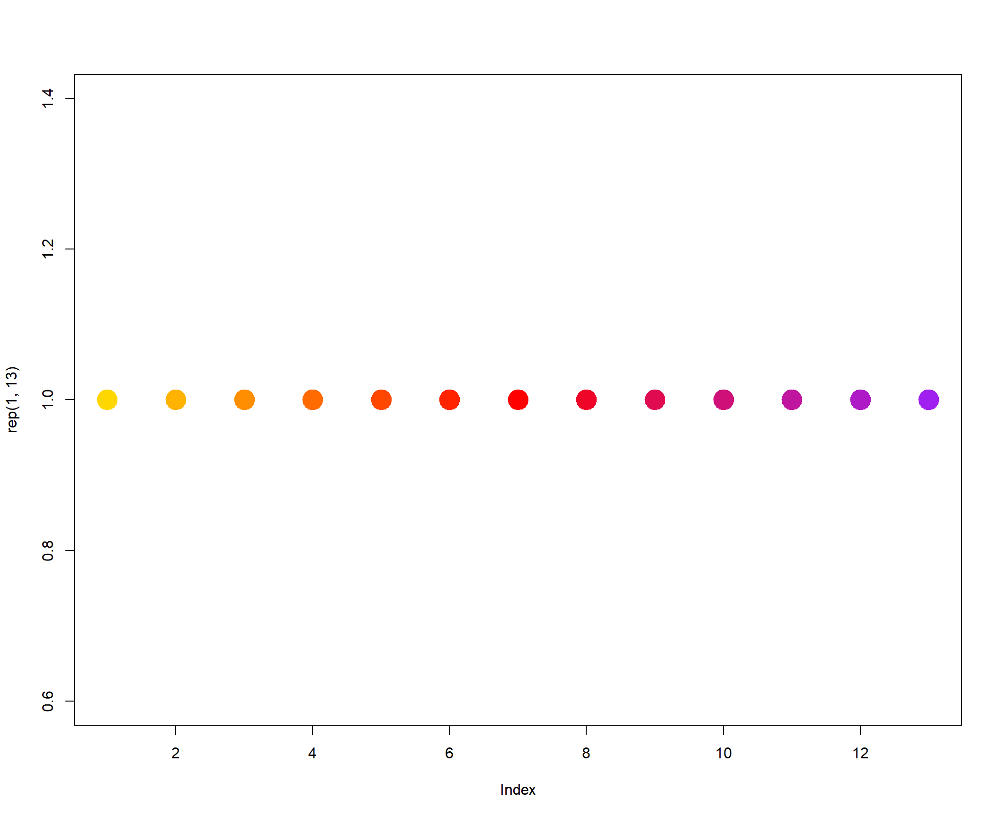

Last updated: 2022-06-08
Checks: 7 0
Knit directory: Denit_visualization_R/
This reproducible R Markdown analysis was created with workflowr (version 1.6.2). The Checks tab describes the reproducibility checks that were applied when the results were created. The Past versions tab lists the development history.
Great! Since the R Markdown file has been committed to the Git repository, you know the exact version of the code that produced these results.
Great job! The global environment was empty. Objects defined in the global environment can affect the analysis in your R Markdown file in unknown ways. For reproduciblity it’s best to always run the code in an empty environment.
The command set.seed(20210924) was run prior to running the code in the R Markdown file. Setting a seed ensures that any results that rely on randomness, e.g. subsampling or permutations, are reproducible.
Great job! Recording the operating system, R version, and package versions is critical for reproducibility.
Nice! There were no cached chunks for this analysis, so you can be confident that you successfully produced the results during this run.
Great job! Using relative paths to the files within your workflowr project makes it easier to run your code on other machines.
Great! You are using Git for version control. Tracking code development and connecting the code version to the results is critical for reproducibility.
The results in this page were generated with repository version 7905c93. See the Past versions tab to see a history of the changes made to the R Markdown and HTML files.
Note that you need to be careful to ensure that all relevant files for the analysis have been committed to Git prior to generating the results (you can use wflow_publish or wflow_git_commit). workflowr only checks the R Markdown file, but you know if there are other scripts or data files that it depends on. Below is the status of the Git repository when the results were generated:
Ignored files:
Ignored: .Rhistory
Ignored: .Rproj.user/
Untracked files:
Untracked: 211020_df_full_innate.xlsx
Untracked: 220421_Griess_antibiotics_experiment_to_kyle_remove_blanks.xlsx
Untracked: 220421_Griess_antibiotics_experiment_to_kyle_remove_blanks_add_pH.xlsx
Untracked: 220421_Griess_antibiotics_experiment_to_kyle_w_autoclaved.xlsx
Untracked: 220422_pH_Antibiotics_Sterile_experiment.xlsx
Untracked: 220519_Griess_antibiotics_experiment_to_kyle_w_autoclaved.xlsx
Untracked: 220521_pH_Antibiotics_dose_effect_experiment.xlsx
Untracked: data/120321_soil_buffering_capacity_Nichols-B.xlsx
Untracked: data/210911_TOC_sample_plate1.xlsx
Untracked: data/210922_Griess_sample_plate1-investigating.xlsx
Untracked: data/210922_Griess_sample_plate1.xlsx
Untracked: data/210927_TOC_sample_plate1_100ul.xlsx
Untracked: data/210927_TOC_sample_plate1_10ul.xlsx
Untracked: data/210928_Griess_sample_plate1.xlsx
Untracked: data/211005_Griess_sample_plate1.xlsx
Untracked: data/211007_Griess_blank_plate1.xlsx
Untracked: data/211007_Griess_blank_plate2.xlsx
Untracked: data/211008_Griess_blank_plate0.xlsx
Untracked: data/211008_Griess_blank_plate1.xlsx
Untracked: data/211017_Griess_plate0.xlsx
Untracked: data/211017_Griess_plate1.xlsx
Untracked: data/211017_Griess_plate2.xlsx
Untracked: data/211017_Griess_plate3.xlsx
Untracked: data/211017_Griess_plate4.xlsx
Untracked: data/211017_Griess_plate5.xlsx
Untracked: data/211017_Griess_plate6.xlsx
Untracked: data/211017_Griess_plate7.xlsx
Untracked: data/211017_Griess_plate8.xlsx
Untracked: data/211019_Griess_plate1.xlsx
Untracked: data/211020_Griess_plate0.xlsx
Untracked: data/211020_Griess_plate1.xlsx
Untracked: data/211020_df_full_innate.xlsx
Untracked: data/211025_Griess_no3_fit_plate0.xlsx
Untracked: data/211025_Griess_no3_fit_plate1.xlsx
Untracked: data/211025_Griess_plate0.xlsx
Untracked: data/211025_Griess_plate1.xlsx
Untracked: data/211028_Griess_plate1.xlsx
Untracked: data/211028_Griess_plate1_no3_fit.xlsx
Untracked: data/211028_Griess_plate2.xlsx
Untracked: data/211028_Griess_plate2_no3_fit.xlsx
Untracked: data/211028_Griess_plate3.xlsx
Untracked: data/211028_Griess_plate3_no3_fit.xlsx
Untracked: data/211028_Griess_plate4.xlsx
Untracked: data/211028_Griess_plate4_no3_fit.xlsx
Untracked: data/211028_time_table.xlsx
Untracked: data/211127_Griess_SUP1.xlsx
Untracked: data/211127_Griess_SUP11.xlsx
Untracked: data/211127_Griess_SUP3.xlsx
Untracked: data/211127_Griess_SUP5.xlsx
Untracked: data/211127_Griess_SUP7.xlsx
Untracked: data/211127_Griess_SUP9.xlsx
Untracked: data/211127_Griess_plate0.xlsx
Untracked: data/211127_time_table.xlsx
Untracked: data/211128_Ammonia_sample_plate10.xlsx
Untracked: data/211128_Ammonia_sample_plate11.xlsx
Untracked: data/211128_Griess_plate1.xlsx
Untracked: data/211128_Griess_plate10.xlsx
Untracked: data/211128_Griess_plate11.xlsx
Untracked: data/211128_Griess_plate2.xlsx
Untracked: data/211128_Griess_plate3.xlsx
Untracked: data/211128_Griess_plate4.xlsx
Untracked: data/211128_Griess_plate5.xlsx
Untracked: data/211128_Griess_plate6.xlsx
Untracked: data/211128_Griess_plate7.xlsx
Untracked: data/211128_Griess_plate8.xlsx
Untracked: data/211128_Griess_plate9.xlsx
Untracked: data/211128_time_table.xlsx
Untracked: data/211201_pH_colorimetric.xlsx
Untracked: data/211203_slurry_vs_water_drying_table.xlsx
Untracked: data/211203_slurry_vs_water_drying_time.xlsx
Untracked: data/211208_pH_colorimetric_T3.xlsx
Untracked: data/211208_pH_colorimetric_T4.xlsx
Untracked: data/211208_pH_colorimetric_T5.xlsx
Untracked: data/211208_pH_colorimetric_plate1.xlsx
Untracked: data/211208_pH_colorimetric_plate2.xlsx
Untracked: data/211208_pH_colorimetric_plate3.xlsx
Untracked: data/211208_time_table.xlsx
Untracked: data/211209_OD600_T1.xlsx
Untracked: data/211209_OD600_T2.xlsx
Untracked: data/211209_OD600_T3.xlsx
Untracked: data/211209_time_table.xlsx
Untracked: data/211210_pH_colorimetric_T0.xlsx
Untracked: data/211210_pH_colorimetric_T1.xlsx
Untracked: data/211210_pH_colorimetric_T2.xlsx
Untracked: data/211210_pH_colorimetric_T3.xlsx
Untracked: data/211210_time_table.xlsx
Untracked: data/211218_pH_colorimetric_t0.xlsx
Untracked: data/211218_pH_colorimetric_t1.xlsx
Untracked: data/211218_pH_colorimetric_t2.xlsx
Untracked: data/211218_pH_colorimetric_t3.xlsx
Untracked: data/211218_pH_colorimetric_t4.xlsx
Untracked: data/211218_time_table.xlsx
Untracked: data/211220_Griess_plate1.xlsx
Untracked: data/211220_Griess_plate10.xlsx
Untracked: data/211220_Griess_plate11.xlsx
Untracked: data/211220_Griess_plate2.xlsx
Untracked: data/211220_Griess_plate3.xlsx
Untracked: data/211220_Griess_plate4.xlsx
Untracked: data/211220_Griess_plate5.xlsx
Untracked: data/211220_Griess_plate6.xlsx
Untracked: data/211220_Griess_plate7.xlsx
Untracked: data/211220_Griess_plate8.xlsx
Untracked: data/211220_Griess_plate9.xlsx
Untracked: data/211220_time_table_AU.xlsx
Untracked: data/211220_time_table_BN.xlsx
Untracked: data/211224_TOC_sample_plate1.xlsx
Untracked: data/220103_Griess_T0.xlsx
Untracked: data/220103_Griess_T1.xlsx
Untracked: data/220103_Griess_T11.xlsx
Untracked: data/220103_Griess_T12.xlsx
Untracked: data/220103_Griess_T2.xlsx
Untracked: data/220103_Griess_T3.xlsx
Untracked: data/220103_Griess_T4.xlsx
Untracked: data/220103_Griess_T5.xlsx
Untracked: data/220103_Griess_T6.xlsx
Untracked: data/220103_Griess_T7.xlsx
Untracked: data/220103_Griess_T8.xlsx
Untracked: data/220103_Griess_T9.xlsx
Untracked: data/220103_time_table.xlsx
Untracked: data/220106_Ammonia_sample_plate1.xlsx
Untracked: data/220107-2_Ammonia_sample_plate1.xlsx
Untracked: data/220107-3_Ammonia_sample_plate1.xlsx
Untracked: data/220107-4_Ammonia_sample_plate1.xlsx
Untracked: data/220107-5_Ammonia_sample_plate1.xlsx
Untracked: data/220107-6_Ammonia_sample_plate1.xlsx
Untracked: data/220107-7_Ammonia_sample_plate1.xlsx
Untracked: data/220107-8_Ammonia_sample_plate1.xlsx
Untracked: data/220107-9_Ammonia_sample_plate1.xlsx
Untracked: data/220107_Ammonia_sample_plate1.xlsx
Untracked: data/220108_Ammonia_sample_plate1.xlsx
Untracked: data/220110_Ammonia_sample_plate1.xlsx
Untracked: data/220110_Ammonia_sample_plate2.xlsx
Untracked: data/220111_Ammonia_sample_T0.xlsx
Untracked: data/220111_Ammonia_sample_T1.xlsx
Untracked: data/220111_Ammonia_sample_T2.xlsx
Untracked: data/220111_Ammonia_sample_T3.xlsx
Untracked: data/220111_TOC_sample_plate1.xlsx
Untracked: data/220112_Ammonia_sample_T11.xlsx
Untracked: data/220112_Ammonia_sample_T12.xlsx
Untracked: data/220112_Ammonia_sample_T4.xlsx
Untracked: data/220112_Ammonia_sample_T5.xlsx
Untracked: data/220112_Ammonia_sample_T6.xlsx
Untracked: data/220112_Ammonia_sample_T7.xlsx
Untracked: data/220112_Ammonia_sample_T8.xlsx
Untracked: data/220112_Ammonia_sample_T9.xlsx
Untracked: data/220113_pH_colorimetric_T0.xlsx
Untracked: data/220113_pH_colorimetric_T12.xlsx
Untracked: data/220113_pH_colorimetric_T2.xlsx
Untracked: data/220113_pH_colorimetric_T3.xlsx
Untracked: data/220113_pH_colorimetric_T8.xlsx
Untracked: data/220125_pH_colorimetric_pH1_mu_opt0.099.xlsx
Untracked: data/220125_pH_colorimetric_pH1_using6.66.xlsx
Untracked: data/220125_pH_colorimetric_pH2_mu_opt0.099.xlsx
Untracked: data/220125_pH_colorimetric_pH2_using6.66.xlsx
Untracked: data/220125_time_table.xlsx
Untracked: data/220128_Ammonia_sample_plate1.xlsx
Untracked: data/220128_Ammonia_sample_plate2.xlsx
Untracked: data/220128_Ammonia_sample_plate3.xlsx
Untracked: data/220128_Ammonia_sample_plate4.xlsx
Untracked: data/220128_Ammonia_sample_plate5.xlsx
Untracked: data/220128_Ammonia_sample_plate6.xlsx
Untracked: data/220128_Griess_plate1.xlsx
Untracked: data/220128_Griess_plate2.xlsx
Untracked: data/220128_Griess_plate3.xlsx
Untracked: data/220128_Griess_plate4.xlsx
Untracked: data/220128_Griess_plate5.xlsx
Untracked: data/220128_Griess_plate6.xlsx
Untracked: data/220128_time_table.xlsx
Untracked: data/220131_Ammonia_sample_plate1.xlsx
Untracked: data/220131_Ammonia_sample_plate2.xlsx
Untracked: data/220131_Ammonia_sample_plate3.xlsx
Untracked: data/220131_Ammonia_sample_plate4.xlsx
Untracked: data/220131_Ammonia_sample_plate5.xlsx
Untracked: data/220131_Ammonia_sample_plate6.xlsx
Untracked: data/220131_Griess_plate1.xlsx
Untracked: data/220131_Griess_plate2.xlsx
Untracked: data/220131_Griess_plate3.xlsx
Untracked: data/220131_Griess_plate4.xlsx
Untracked: data/220131_Griess_plate5.xlsx
Untracked: data/220131_Griess_plate6.xlsx
Untracked: data/220131_pH_colorimetric_pH1_mu_opt_T0.xlsx
Untracked: data/220131_pH_colorimetric_pH2_mu_opt_T0.xlsx
Untracked: data/220131_time_table.xlsx
Untracked: data/220327_Griess_pastplate9.xlsx
Untracked: data/220327_Griess_plate1.xlsx
Untracked: data/220327_Griess_plate10.xlsx
Untracked: data/220327_Griess_plate11.xlsx
Untracked: data/220327_Griess_plate12.xlsx
Untracked: data/220327_Griess_plate13.xlsx
Untracked: data/220327_Griess_plate14.xlsx
Untracked: data/220327_Griess_plate15.xlsx
Untracked: data/220327_Griess_plate16.xlsx
Untracked: data/220327_Griess_plate2.xlsx
Untracked: data/220327_Griess_plate3.xlsx
Untracked: data/220327_Griess_plate4.xlsx
Untracked: data/220327_Griess_plate5.xlsx
Untracked: data/220327_Griess_plate6.xlsx
Untracked: data/220327_Griess_plate7.xlsx
Untracked: data/220327_Griess_plate8.xlsx
Untracked: data/220327_Griess_plate9.xlsx
Untracked: data/220327_time_table.xlsx
Untracked: data/220329_pH_colorimetric_pH1_mu_opt_T0.xlsx
Untracked: data/220329_pH_colorimetric_pH2_mu_opt_T0.xlsx
Untracked: data/220329_pH_colorimetric_pH3_mu_opt_T0.xlsx
Untracked: data/220329_pH_colorimetric_pH4_mu_opt_T0.xlsx
Untracked: data/220329_pH_colorimetric_pH6_mu_opt_T0.xlsx
Untracked: data/220329_pH_colorimetric_pH7_mu_opt_T0.xlsx
Untracked: data/220407_pH_colorimetric_pH3_half_mu_opt_T0.xlsx
Untracked: data/220407_pH_colorimetric_pH_base_treatment_mu_opt_T0.xlsx
Untracked: data/220407_pH_colorimetric_pH_standard_150ul_mu_opt_T0.xlsx
Untracked: data/220407_pH_colorimetric_pH_standard_300ul_mu_opt_T0.xlsx
Untracked: data/220407_pH_colorimetric_pH_standard_60ul_mu_opt_T0.xlsx
Untracked: data/220408_pH_colorimetric_pH_limit_mu_opt_water.xlsx
Untracked: data/220412_pH_colorimetric_pH_half_mu_opt_WW.xlsx
Untracked: data/220414_Ammonia_sample_plate0.xlsx
Untracked: data/220418_Ammonia_sample_plate0.xlsx
Untracked: data/220419_Ammonia_sample_plate0.xlsx
Untracked: data/220420-2_Ammonia_bcf.xlsx
Untracked: data/220420_Ammonia_sample_plate1.xlsx
Untracked: data/220420_Ammonia_sample_plate10.xlsx
Untracked: data/220420_Ammonia_sample_plate11.xlsx
Untracked: data/220420_Ammonia_sample_plate12.xlsx
Untracked: data/220420_Ammonia_sample_plate13.xlsx
Untracked: data/220420_Ammonia_sample_plate14.xlsx
Untracked: data/220420_Ammonia_sample_plate15.xlsx
Untracked: data/220420_Ammonia_sample_plate16.xlsx
Untracked: data/220420_Ammonia_sample_plate2.xlsx
Untracked: data/220420_Ammonia_sample_plate3.xlsx
Untracked: data/220420_Ammonia_sample_plate4.xlsx
Untracked: data/220420_Ammonia_sample_plate5.xlsx
Untracked: data/220420_Ammonia_sample_plate6.xlsx
Untracked: data/220420_Ammonia_sample_plate7.xlsx
Untracked: data/220420_Ammonia_sample_plate8.xlsx
Untracked: data/220420_Ammonia_sample_plate9.xlsx
Untracked: data/220421_Ammonia_df_a_bcf.xlsx
Untracked: data/220421_Ammonia_df_pH_range.xlsx
Untracked: data/220421_Ammonia_sample_plate1.xlsx
Untracked: data/220421_Ammonia_sample_plate10.xlsx
Untracked: data/220421_Ammonia_sample_plate11.xlsx
Untracked: data/220421_Ammonia_sample_plate2.xlsx
Untracked: data/220421_Ammonia_sample_plate3.xlsx
Untracked: data/220421_Ammonia_sample_plate4.xlsx
Untracked: data/220421_Ammonia_sample_plate5.xlsx
Untracked: data/220421_Ammonia_sample_plate6.xlsx
Untracked: data/220421_Ammonia_sample_plate7.xlsx
Untracked: data/220421_Ammonia_sample_plate8.xlsx
Untracked: data/220421_Ammonia_sample_plate9.xlsx
Untracked: data/220421_Ammonia_sterile.xlsx
Untracked: data/220421_Griess_antibiotics_experiment_to_kyle_remove_blanks.xlsx
Untracked: data/220421_Griess_antibiotics_experiment_to_kyle_remove_blanks_add_pH.xlsx
Untracked: data/220421_Griess_plate1.xlsx
Untracked: data/220421_Griess_plate10.xlsx
Untracked: data/220421_Griess_plate11.xlsx
Untracked: data/220421_Griess_plate2.xlsx
Untracked: data/220421_Griess_plate3.xlsx
Untracked: data/220421_Griess_plate4.xlsx
Untracked: data/220421_Griess_plate5.xlsx
Untracked: data/220421_Griess_plate6.xlsx
Untracked: data/220421_Griess_plate7.xlsx
Untracked: data/220421_Griess_plate8.xlsx
Untracked: data/220421_Griess_plate9.xlsx
Untracked: data/220421_nitrate_reduced_autoclaved_samples.xlsx
Untracked: data/220421_time_table.xlsx
Untracked: data/220422_pH_Antibiotics_Sterile_experiment.xlsx
Untracked: data/220422_pH_colorimetric_LBA_Sterile_T0_mu_opt_T0.xlsx
Untracked: data/220422_pH_colorimetric_LBA_Sterile_T4_mu_opt_T0.xlsx
Untracked: data/220422_pH_colorimetric_LBA_Sterile_T4_mu_opt_T4.xlsx
Untracked: data/220422_pH_colorimetric_LBA_Sterile_T7_mu_opt_T0.xlsx
Untracked: data/220422_pH_colorimetric_LBA_Sterile_T7_mu_opt_T7.xlsx
Untracked: data/220422_pH_colorimetric_LBA_Sterile_T9_mu_opt_T0.xlsx
Untracked: data/220422_pH_colorimetric_LBA_Sterile_T9_mu_opt_T9.xlsx
Untracked: data/220508_TOC_sample_plate1.xlsx
Untracked: data/220513_TOC_sample_plate1.xlsx
Untracked: data/220513_TOC_sample_plate2.xlsx
Untracked: data/220513_TOC_sample_plate3.xlsx
Untracked: data/220517_time_table.xlsx
Untracked: data/220519_Griess_antibiotics_dose_experiment_remove_blanks.xlsx
Untracked: data/220519_Griess_crerar7_extreme.xlsx
Untracked: data/220519_Griess_plate1.xlsx
Untracked: data/220519_Griess_plate10.xlsx
Untracked: data/220519_Griess_plate11.xlsx
Untracked: data/220519_Griess_plate2.xlsx
Untracked: data/220519_Griess_plate3.xlsx
Untracked: data/220519_Griess_plate4.xlsx
Untracked: data/220519_Griess_plate5.xlsx
Untracked: data/220519_Griess_plate6.xlsx
Untracked: data/220519_Griess_plate7.xlsx
Untracked: data/220519_Griess_plate8.xlsx
Untracked: data/220519_Griess_plate9.xlsx
Untracked: data/220519_time_table.xlsx
Untracked: data/220520_TOC_sample_plate1.xlsx
Untracked: data/220520_TOC_sample_plate2.xlsx
Untracked: data/220520_TOC_sample_plate3.xlsx
Untracked: data/220521_pH_Antibiotics_dose_effect_experiment.xlsx
Untracked: data/220521_pH_colorimetric_Barneveld2_Sterile_T0_mu_opt_T0.xlsx
Untracked: data/220521_pH_colorimetric_Barneveld2_Sterile_T10_mu_opt_T0.xlsx
Untracked: data/220521_pH_colorimetric_Barneveld2_Sterile_T7_mu_opt_T0.xlsx
Untracked: data/220526_TOC_sample_plate1.xlsx
Untracked: data/220527_TOC_sample_plate1.xlsx
Untracked: data/220601_TOC_sample_plate1.xlsx
Untracked: data/220602-2_TOC_sample_plate1.xlsx
Untracked: data/220602-2_control_OD600.xlsx
Untracked: data/220602-3_TOC_sample_plate1.xlsx
Untracked: data/220602-3_control_OD600.xlsx
Untracked: data/220602_TOC_sample_plate1.xlsx
Untracked: data/220603_100ul_OD600.xlsx
Untracked: data/220603_TOC_sample_plate1.xlsx
Untracked: data/220603_TOC_sample_plate2.xlsx
Untracked: data/220606_TOC_sample_plate1.xlsx
Untracked: data/220606_TOC_sample_plate2.xlsx
Untracked: data/ForKiseok_from_Dr_Cuhel.xlsx
Untracked: data/ForKiseok_from_Dr_Cuhel_format_edited.xlsx
Untracked: data/OD434_OD585_C_WB_T5_220329.xlsx
Untracked: data/OD434_OD585_WW_C_T0_220329.xlsx
Untracked: data/OD434_OD585_pH3_half_area_220407.xlsx
Untracked: data/OD434_OD585_pH_base_treated_T0_220407.xlsx
Untracked: data/OD434_OD585_pH_half_150ul_220412.xlsx
Untracked: data/SPNa_86437_021122_edit.xlsx
Untracked: data/SPNa_86437_021122_edit2.xlsx
Untracked: data/TOC_TN_measurement_2_labs_211014.xlsx
Untracked: data/dry_weight_curve(9.5.21).xlsx
Untracked: data/pH_data(11.17.21)-Midway_etc.xlsx
Untracked: data/pH_data(12.6.21)-Midway_incubation_endpoint.xlsx
Untracked: data/pH_data(9.14.21).xlsx
Untracked: data/pH_data(9.28.21).xlsx
Untracked: data/pH_standard_150ul_220407.xlsx
Untracked: data/pH_standard_300ul_220407.xlsx
Untracked: data/pH_standard_60ul_220407.xlsx
Untracked: data/~$220513_TOC_sample_plate1.xlsx
Untracked: data/~$SPNa_86437_021122_edit.xlsx
Untracked: past_figures/
Note that any generated files, e.g. HTML, png, CSS, etc., are not included in this status report because it is ok for generated content to have uncommitted changes.
These are the previous versions of the repository in which changes were made to the R Markdown (analysis/220421_Ammonia_antibiotics_and_sterile.Rmd) and HTML (docs/220421_Ammonia_antibiotics_and_sterile.html) files. If you’ve configured a remote Git repository (see ?wflow_git_remote), click on the hyperlinks in the table below to view the files as they were in that past version.
| File | Version | Author | Date | Message |
|---|---|---|---|---|
| Rmd | 7905c93 | KiseokUchicago | 2022-06-08 | wflow_publish("analysis/*.Rmd") |
Researcher: Kiseok Lee
Experiment Date: 4/14/22 - 4/18/22 (5 days)
Analysis Date: 4/25/21 Lab: Seppe Kuehn
# libraries
library(dplyr)
library(ggplot2)
library(RColorBrewer)
library(vegan)
library(tidyverse)
library(magrittr)
library(readxl)
library(reshape2)
library(gtools)
library(devtools)
library(openxlsx)
library(ape)
library(stringr)
library(tidyr)
library(ggrepel)
library(ggpubr)
## theme for ggplot
mytheme <- theme_bw() + theme(text = element_text(face = "bold",
colour = "black")) + theme(plot.title = element_text(size = 19,
hjust = 0.5, face = "bold", colour = "black")) +
theme(axis.title.x = element_text(size = 17,
hjust = 0.5, face = "bold", colour = "black")) +
theme(axis.title.y = element_text(size = 17,
hjust = 0.5, face = "bold", colour = "black")) +
theme(axis.text.x = element_text(hjust = 0.5,
vjust = 0.3, size = 13, face = "bold",
colour = "black")) + theme(axis.text.y = element_text(size = 13,
face = "bold", colour = "black")) + theme(panel.grid.major = element_blank()) +
theme(panel.grid.minor = element_blank(),
panel.background = element_blank(),
panel.border = element_blank(), plot.background = element_blank()) +
theme(axis.ticks = element_line(size = 1.1)) +
theme(legend.text = element_text(size = 10,
face = "bold", colour = "black"))
mytheme_2d <- theme_bw() + theme(text = element_text(face = "bold",
colour = "black")) + theme(plot.title = element_text(size = 19,
hjust = 0.5, face = "bold", colour = "black")) +
theme(axis.title.x = element_text(size = 17,
hjust = 0.5, face = "bold", colour = "black")) +
theme(axis.title.y = element_text(size = 17,
hjust = 0.5, face = "bold", colour = "black")) +
theme(axis.text.x = element_text(hjust = 0.5,
vjust = 0.3, size = 13, face = "bold",
colour = "black")) + theme(axis.text.y = element_text(size = 13,
face = "bold", colour = "black")) + # theme(panel.grid.major = element_blank()) + theme(panel.grid.minor = element_blank(),panel.background=element_blank(),plot.background=element_blank()) + face
face = "bold", colour = "black")) + # theme(panel.grid.major = element_blank()) + theme(panel.grid.minor = element_blank(),panel.background=element_blank(),plot.background=element_blank()) + =
face = "bold", colour = "black")) + # theme(panel.grid.major = element_blank()) + theme(panel.grid.minor = element_blank(),panel.background=element_blank(),plot.background=element_blank()) + "bold",
face = "bold", colour = "black")) + # theme(panel.grid.major = element_blank()) + theme(panel.grid.minor = element_blank(),panel.background=element_blank(),plot.background=element_blank()) + colour
face = "bold", colour = "black")) + # theme(panel.grid.major = element_blank()) + theme(panel.grid.minor = element_blank(),panel.background=element_blank(),plot.background=element_blank()) + =
face = "bold", colour = "black")) + # theme(panel.grid.major = element_blank()) + theme(panel.grid.minor = element_blank(),panel.background=element_blank(),plot.background=element_blank()) + "black"))
face = "bold", colour = "black")) + # theme(panel.grid.major = element_blank()) + theme(panel.grid.minor = element_blank(),panel.background=element_blank(),plot.background=element_blank()) + +
face = "bold", colour = "black")) + # theme(panel.grid.major = element_blank()) + theme(panel.grid.minor = element_blank(),panel.background=element_blank(),plot.background=element_blank()) + #
face = "bold", colour = "black")) + # theme(panel.grid.major = element_blank()) + theme(panel.grid.minor = element_blank(),panel.background=element_blank(),plot.background=element_blank()) + theme(panel.grid.major
face = "bold", colour = "black")) + # theme(panel.grid.major = element_blank()) + theme(panel.grid.minor = element_blank(),panel.background=element_blank(),plot.background=element_blank()) + =
face = "bold", colour = "black")) + # theme(panel.grid.major = element_blank()) + theme(panel.grid.minor = element_blank(),panel.background=element_blank(),plot.background=element_blank()) + element_blank())
face = "bold", colour = "black")) + # theme(panel.grid.major = element_blank()) + theme(panel.grid.minor = element_blank(),panel.background=element_blank(),plot.background=element_blank()) + +
face = "bold", colour = "black")) + # theme(panel.grid.major = element_blank()) + theme(panel.grid.minor = element_blank(),panel.background=element_blank(),plot.background=element_blank()) + theme(panel.grid.minor
face = "bold", colour = "black")) + # theme(panel.grid.major = element_blank()) + theme(panel.grid.minor = element_blank(),panel.background=element_blank(),plot.background=element_blank()) + =
face = "bold", colour = "black")) + # theme(panel.grid.major = element_blank()) + theme(panel.grid.minor = element_blank(),panel.background=element_blank(),plot.background=element_blank()) + element_blank(),panel.background=element_blank(),plot.background=element_blank())
face = "bold", colour = "black")) + # theme(panel.grid.major = element_blank()) + theme(panel.grid.minor = element_blank(),panel.background=element_blank(),plot.background=element_blank()) + +
theme(axis.ticks = element_line(size = 1.1)) +
theme(legend.text = element_text(size = 10,
face = "bold", colour = "black"))
# color collection
my_color_collection <- c("#CBD588", "#5F7FC7",
"orange", "#AD6F3B", "#673770", "#D14285",
"#652926", "#C84248", "#8569D5", "#5E738F",
"#D1A33D", "#8A7C64", "#599861", "#616163",
"#FFCDB2", "#6D9F71", "#242F40", "#CCA43B",
"#F92A82", "#ED7B84", "#7EB77F", "#DEC4A1",
"#E5D1D0", "#0E8482", "#C9DAEA", "#337357",
"#95C623", "#E55812", "#04471C", "#F2D7EE",
"#D3BCC0", "#A5668B", "#69306D", "#0E103D",
"#1A535C", "#4ECDC4", "#F7FFF7", "#FF6B6B",
"#FFE66D", "#6699CC", "#FFF275", "#FF8C42",
"#FF3C38", "#A23E48", "#000000", "#CF5C36",
"#EEE5E9", "#7C7C7C", "#EFC88B", "#2E5266",
"#6E8898", "#9FB1BC", "#D3D0CB", "#E2C044",
"#5BC0EB", "#FDE74C", "#9BC53D", "#E55934",
"#FA7921", "#CD9BCD", "#508578", "#DA5724")
# for git push, use this instead of
# using wflow_git_push() git push -u
# origin master (in the Git app / in
# the working directory)
# for making pdf file
library(rmarkdown)
# render('analysis/~~.Rmd',
# 'pdf_document')Error: <text>:50:18: unexpected ','
49: face = "bold", colour = "black")) + # theme(panel.grid.major = element_blank()) + theme(panel.grid.minor = element_blank(),panel.background=element_blank(),plot.background=element_blank()
50: face = "bold",
^We are going to use the vcl3 treated standard curve that is fitted with pure Ammonia standards
# import file
df_plate1 <- openxlsx::read.xlsx("data/220421_Ammonia_sample_plate1.xlsx")
df_plate2 <- openxlsx::read.xlsx("data/220421_Ammonia_sample_plate2.xlsx")
df_plate3 <- openxlsx::read.xlsx("data/220421_Ammonia_sample_plate3.xlsx")
df_plate4 <- openxlsx::read.xlsx("data/220421_Ammonia_sample_plate4.xlsx")
df_plate5 <- openxlsx::read.xlsx("data/220421_Ammonia_sample_plate5.xlsx")
df_plate6 <- openxlsx::read.xlsx("data/220421_Ammonia_sample_plate6.xlsx")
df_plate7 <- openxlsx::read.xlsx("data/220421_Ammonia_sample_plate7.xlsx")
df_plate8 <- openxlsx::read.xlsx("data/220421_Ammonia_sample_plate8.xlsx")
df_plate9 <- openxlsx::read.xlsx("data/220421_Ammonia_sample_plate9.xlsx")
df_plate10 <- openxlsx::read.xlsx("data/220421_Ammonia_sample_plate10.xlsx")
df_plate11 <- openxlsx::read.xlsx("data/220421_Ammonia_sample_plate11.xlsx")
head(df_plate1) Well Nitrite_input Nitrate_input Ammonium_input Soil
1 A01 0 2 0 LaBaghWoods_pH6.66
2 A02 0 2 0 LaBaghWoods_pH6.66
3 A03 0 2 0 LaBaghWoods_pH6.66
4 A04 0 2 0 LaBaghWoods_pH6.66
5 A05 0 2 0 LaBaghWoods_pH6.66
6 A06 0 2 0 LaBaghWoods_pH6.66
Sample_type Titration_type Antibiotics_type Unit Concentration_M Added_ul
1 Slurry HCl CHL 2 1 20
2 Slurry HCl CHL 6 3 20
3 Slurry NaOH CHL 2 1 20
4 Slurry NaOH CHL 6 3 20
5 Slurry HCl CHL 0 0 20
6 Slurry HCl CHL 0 0 20
Time_point Ammonia_OD650 Ammonia_mM
1 LBA_T0 0.06700 0.03065295
2 LBA_T0 0.04935 0.02247086
3 LBA_T0 0.08815 0.04046254
4 LBA_T0 0.04350 0.01975979
5 LBA_T0 0.06075 0.02775518
6 LBA_T0 0.11025 0.05071858colnames(df_plate1) [1] "Well" "Nitrite_input" "Nitrate_input" "Ammonium_input"
[5] "Soil" "Sample_type" "Titration_type" "Antibiotics_type"
[9] "Unit" "Concentration_M" "Added_ul" "Time_point"
[13] "Ammonia_OD650" "Ammonia_mM" dim(df_plate1)[1] 96 14head(df_plate2) Well Nitrite_input Nitrate_input Ammonium_input Soil
1 A01 0 2 0 LaBaghWoods_pH6.66
2 A02 0 2 0 LaBaghWoods_pH6.66
3 A03 0 2 0 LaBaghWoods_pH6.66
4 A04 0 2 0 LaBaghWoods_pH6.66
5 A05 0 2 0 LaBaghWoods_pH6.66
6 A06 0 2 0 LaBaghWoods_pH6.66
Sample_type Titration_type Antibiotics_type Unit Concentration_M Added_ul
1 Slurry HCl CHL 2 1 20
2 Slurry HCl CHL 6 3 20
3 Slurry NaOH CHL 2 1 20
4 Slurry NaOH CHL 6 3 20
5 Slurry HCl CHL 0 0 20
6 Slurry HCl CHL 0 0 20
Time_point Ammonia_OD650 Ammonia_mM
1 LBA_T1 0.06740 0.03083842
2 LBA_T1 0.06360 0.02907650
3 LBA_T1 0.11645 0.05359692
4 LBA_T1 0.13755 0.06339606
5 LBA_T1 0.10390 0.04777110
6 LBA_T1 0.19680 0.09094182colnames(df_plate2) [1] "Well" "Nitrite_input" "Nitrate_input" "Ammonium_input"
[5] "Soil" "Sample_type" "Titration_type" "Antibiotics_type"
[9] "Unit" "Concentration_M" "Added_ul" "Time_point"
[13] "Ammonia_OD650" "Ammonia_mM" dim(df_plate2)[1] 96 14head(df_plate3) Well Nitrite_input Nitrate_input Ammonium_input Soil
1 A01 0 2 0 LaBaghWoods_pH6.66
2 A02 0 2 0 LaBaghWoods_pH6.66
3 A03 0 2 0 LaBaghWoods_pH6.66
4 A04 0 2 0 LaBaghWoods_pH6.66
5 A05 0 2 0 LaBaghWoods_pH6.66
6 A06 0 2 0 LaBaghWoods_pH6.66
Sample_type Titration_type Antibiotics_type Unit Concentration_M Added_ul
1 Slurry HCl CHL 2 1 20
2 Slurry HCl CHL 6 3 20
3 Slurry NaOH CHL 2 1 20
4 Slurry NaOH CHL 6 3 20
5 Slurry HCl CHL 0 0 20
6 Slurry HCl CHL 0 0 20
Time_point Ammonia_OD650 Ammonia_mM
1 LBA_T2 0.07855 0.03600928
2 LBA_T2 0.06235 0.02849696
3 LBA_T2 0.20750 0.09592093
4 LBA_T2 0.21465 0.09924887
5 LBA_T2 0.10455 0.04807279
6 LBA_T2 0.09960 0.04577545colnames(df_plate3) [1] "Well" "Nitrite_input" "Nitrate_input" "Ammonium_input"
[5] "Soil" "Sample_type" "Titration_type" "Antibiotics_type"
[9] "Unit" "Concentration_M" "Added_ul" "Time_point"
[13] "Ammonia_OD650" "Ammonia_mM" dim(df_plate3)[1] 96 14head(df_plate4) Well Nitrite_input Nitrate_input Ammonium_input Soil
1 A01 0 2 0 LaBaghWoods_pH6.66
2 A02 0 2 0 LaBaghWoods_pH6.66
3 A03 0 2 0 LaBaghWoods_pH6.66
4 A04 0 2 0 LaBaghWoods_pH6.66
5 A05 0 2 0 LaBaghWoods_pH6.66
6 A06 0 2 0 LaBaghWoods_pH6.66
Sample_type Titration_type Antibiotics_type Unit Concentration_M Added_ul
1 Slurry HCl CHL 2 1 20
2 Slurry HCl CHL 6 3 20
3 Slurry NaOH CHL 2 1 20
4 Slurry NaOH CHL 6 3 20
5 Slurry HCl CHL 0 0 20
6 Slurry HCl CHL 0 0 20
Time_point Ammonia_OD650 Ammonia_mM
1 LBA_T3 0.07310 0.03348163
2 LBA_T3 0.05740 0.02620217
3 LBA_T3 0.18120 0.08368508
4 LBA_T3 0.23435 0.10842144
5 LBA_T3 0.07885 0.03614843
6 LBA_T3 0.12240 0.05635963colnames(df_plate4) [1] "Well" "Nitrite_input" "Nitrate_input" "Ammonium_input"
[5] "Soil" "Sample_type" "Titration_type" "Antibiotics_type"
[9] "Unit" "Concentration_M" "Added_ul" "Time_point"
[13] "Ammonia_OD650" "Ammonia_mM" dim(df_plate4)[1] 96 14head(df_plate5) Well Nitrite_input Nitrate_input Ammonium_input Soil
1 A01 0 2 0 LaBaghWoods_pH6.66
2 A02 0 2 0 LaBaghWoods_pH6.66
3 A03 0 2 0 LaBaghWoods_pH6.66
4 A04 0 2 0 LaBaghWoods_pH6.66
5 A05 0 2 0 LaBaghWoods_pH6.66
6 A06 0 2 0 LaBaghWoods_pH6.66
Sample_type Titration_type Antibiotics_type Unit Concentration_M Added_ul
1 Slurry HCl CHL 2 1 20
2 Slurry HCl CHL 6 3 20
3 Slurry NaOH CHL 2 1 20
4 Slurry NaOH CHL 6 3 20
5 Slurry HCl CHL 0 0 20
6 Slurry HCl CHL 0 0 20
Time_point Ammonia_OD650 Ammonia_mM
1 LBA_T4 0.11760 0.05413086
2 LBA_T4 0.05640 0.02573861
3 LBA_T4 0.25790 0.11939292
4 LBA_T4 0.32060 0.14863707
5 LBA_T4 0.15045 0.06938970
6 LBA_T4 0.19130 0.08838301colnames(df_plate5) [1] "Well" "Nitrite_input" "Nitrate_input" "Ammonium_input"
[5] "Soil" "Sample_type" "Titration_type" "Antibiotics_type"
[9] "Unit" "Concentration_M" "Added_ul" "Time_point"
[13] "Ammonia_OD650" "Ammonia_mM" dim(df_plate5)[1] 96 14head(df_plate6) Well Nitrite_input Nitrate_input Ammonium_input Soil
1 A01 0 2 0 LaBaghWoods_pH6.66
2 A02 0 2 0 LaBaghWoods_pH6.66
3 A03 0 2 0 LaBaghWoods_pH6.66
4 A04 0 2 0 LaBaghWoods_pH6.66
5 A05 0 2 0 LaBaghWoods_pH6.66
6 A06 0 2 0 LaBaghWoods_pH6.66
Sample_type Titration_type Antibiotics_type Unit Concentration_M Added_ul
1 Slurry HCl CHL 2 1 20
2 Slurry HCl CHL 6 3 20
3 Slurry NaOH CHL 2 1 20
4 Slurry NaOH CHL 6 3 20
5 Slurry HCl CHL 0 0 20
6 Slurry HCl CHL 0 0 20
Time_point Ammonia_OD650 Ammonia_mM
1 LBA_T5 0.15875 0.07324714
2 LBA_T5 0.09015 0.04139044
3 LBA_T5 0.25065 0.11601456
4 LBA_T5 0.32690 0.15157817
5 LBA_T5 0.24250 0.11221759
6 LBA_T5 0.21170 0.09787573colnames(df_plate6) [1] "Well" "Nitrite_input" "Nitrate_input" "Ammonium_input"
[5] "Soil" "Sample_type" "Titration_type" "Antibiotics_type"
[9] "Unit" "Concentration_M" "Added_ul" "Time_point"
[13] "Ammonia_OD650" "Ammonia_mM" dim(df_plate6)[1] 96 14head(df_plate7) Well Nitrite_input Nitrate_input Ammonium_input Soil
1 A01 0 2 0 LaBaghWoods_pH6.66
2 A02 0 2 0 LaBaghWoods_pH6.66
3 A03 0 2 0 LaBaghWoods_pH6.66
4 A04 0 2 0 LaBaghWoods_pH6.66
5 A05 0 2 0 LaBaghWoods_pH6.66
6 A06 0 2 0 LaBaghWoods_pH6.66
Sample_type Titration_type Antibiotics_type Unit Concentration_M Added_ul
1 Slurry HCl CHL 2 1 20
2 Slurry HCl CHL 6 3 20
3 Slurry NaOH CHL 2 1 20
4 Slurry NaOH CHL 6 3 20
5 Slurry HCl CHL 0 0 20
6 Slurry HCl CHL 0 0 20
Time_point Ammonia_OD650 Ammonia_mM
1 LBA_T6 0.19460 0.08991825
2 LBA_T6 0.09580 0.04401203
3 LBA_T6 0.29875 0.13844039
4 LBA_T6 0.32090 0.14877711
5 LBA_T6 0.24490 0.11333563
6 LBA_T6 0.26380 0.12214268colnames(df_plate7) [1] "Well" "Nitrite_input" "Nitrate_input" "Ammonium_input"
[5] "Soil" "Sample_type" "Titration_type" "Antibiotics_type"
[9] "Unit" "Concentration_M" "Added_ul" "Time_point"
[13] "Ammonia_OD650" "Ammonia_mM" dim(df_plate7)[1] 96 14head(df_plate8) Well Nitrite_input Nitrate_input Ammonium_input Soil
1 A01 0 2 0 LaBaghWoods_pH6.66
2 A02 0 2 0 LaBaghWoods_pH6.66
3 A03 0 2 0 LaBaghWoods_pH6.66
4 A04 0 2 0 LaBaghWoods_pH6.66
5 A05 0 2 0 LaBaghWoods_pH6.66
6 A06 0 2 0 LaBaghWoods_pH6.66
Sample_type Titration_type Antibiotics_type Unit Concentration_M Added_ul
1 Slurry HCl CHL 2 1 20
2 Slurry HCl CHL 6 3 20
3 Slurry NaOH CHL 2 1 20
4 Slurry NaOH CHL 6 3 20
5 Slurry HCl CHL 0 0 20
6 Slurry HCl CHL 0 0 20
Time_point Ammonia_OD650 Ammonia_mM
1 LBA_T7 0.00000 0.0000000
2 LBA_T7 0.09435 0.0433392
3 LBA_T7 0.41340 0.1920101
4 LBA_T7 0.38890 0.1805488
5 LBA_T7 0.37060 0.1719928
6 LBA_T7 0.38760 0.1799408colnames(df_plate8) [1] "Well" "Nitrite_input" "Nitrate_input" "Ammonium_input"
[5] "Soil" "Sample_type" "Titration_type" "Antibiotics_type"
[9] "Unit" "Concentration_M" "Added_ul" "Time_point"
[13] "Ammonia_OD650" "Ammonia_mM" dim(df_plate8)[1] 96 14head(df_plate9) Well Nitrite_input Nitrate_input Ammonium_input Soil
1 A01 0 2 0 LaBaghWoods_pH6.66
2 A02 0 2 0 LaBaghWoods_pH6.66
3 A03 0 2 0 LaBaghWoods_pH6.66
4 A04 0 2 0 LaBaghWoods_pH6.66
5 A05 0 2 0 LaBaghWoods_pH6.66
6 A06 0 2 0 LaBaghWoods_pH6.66
Sample_type Titration_type Antibiotics_type Unit Concentration_M Added_ul
1 Slurry HCl CHL 2 1 20
2 Slurry HCl CHL 6 3 20
3 Slurry NaOH CHL 2 1 20
4 Slurry NaOH CHL 6 3 20
5 Slurry HCl CHL 0 0 20
6 Slurry HCl CHL 0 0 20
Time_point Ammonia_OD650 Ammonia_mM
1 LBA_T8 0.37255 0.1729043
2 LBA_T8 0.12745 0.0587048
3 LBA_T8 0.49425 0.2298857
4 LBA_T8 0.51575 0.2399717
5 LBA_T8 0.49890 0.2320666
6 LBA_T8 0.49380 0.2296747colnames(df_plate9) [1] "Well" "Nitrite_input" "Nitrate_input" "Ammonium_input"
[5] "Soil" "Sample_type" "Titration_type" "Antibiotics_type"
[9] "Unit" "Concentration_M" "Added_ul" "Time_point"
[13] "Ammonia_OD650" "Ammonia_mM" dim(df_plate9)[1] 96 14head(df_plate10) Well Nitrite_input Nitrate_input Ammonium_input Soil
1 A01 0 2 0 LaBaghWoods_pH6.66
2 A02 0 2 0 LaBaghWoods_pH6.66
3 A03 0 2 0 LaBaghWoods_pH6.66
4 A04 0 2 0 LaBaghWoods_pH6.66
5 A05 0 2 0 LaBaghWoods_pH6.66
6 A06 0 2 0 LaBaghWoods_pH6.66
Sample_type Titration_type Antibiotics_type Unit Concentration_M Added_ul
1 Slurry HCl CHL 2 1 20
2 Slurry HCl CHL 6 3 20
3 Slurry NaOH CHL 2 1 20
4 Slurry NaOH CHL 6 3 20
5 Slurry HCl CHL 0 0 20
6 Slurry HCl CHL 0 0 20
Time_point Ammonia_OD650 Ammonia_mM
1 LBA_T9 0.40560 0.18836034
2 LBA_T9 0.14150 0.06523111
3 LBA_T9 0.54825 0.25522892
4 LBA_T9 0.53050 0.24689446
5 LBA_T9 0.56105 0.26124160
6 LBA_T9 0.60540 0.28209067colnames(df_plate10) [1] "Well" "Nitrite_input" "Nitrate_input" "Ammonium_input"
[5] "Soil" "Sample_type" "Titration_type" "Antibiotics_type"
[9] "Unit" "Concentration_M" "Added_ul" "Time_point"
[13] "Ammonia_OD650" "Ammonia_mM" dim(df_plate10)[1] 96 14head(df_plate11) Well Nitrite_input Nitrate_input Ammonium_input Soil
1 A01 0 2 0 LaBaghWoods_pH6.66
2 A02 0 2 0 LaBaghWoods_pH6.66
3 A03 0 2 0 LaBaghWoods_pH6.66
4 A04 0 2 0 LaBaghWoods_pH6.66
5 A05 0 2 0 LaBaghWoods_pH6.66
6 A06 0 2 0 LaBaghWoods_pH6.66
Sample_type Titration_type Antibiotics_type Unit Concentration_M Added_ul
1 Slurry HCl CHL 2 1 20
2 Slurry HCl CHL 6 3 20
3 Slurry NaOH CHL 2 1 20
4 Slurry NaOH CHL 6 3 20
5 Slurry HCl CHL 0 0 20
6 Slurry HCl CHL 0 0 20
Time_point Ammonia_OD650 Ammonia_mM
1 LBA_T10 0.53570 0.24933569
2 LBA_T10 0.15895 0.07334011
3 LBA_T10 0.69505 0.32431191
4 LBA_T10 0.63785 0.29736136
5 LBA_T10 0.61600 0.28707746
6 LBA_T10 0.63495 0.29599610colnames(df_plate11) [1] "Well" "Nitrite_input" "Nitrate_input" "Ammonium_input"
[5] "Soil" "Sample_type" "Titration_type" "Antibiotics_type"
[9] "Unit" "Concentration_M" "Added_ul" "Time_point"
[13] "Ammonia_OD650" "Ammonia_mM" dim(df_plate11)[1] 96 14# X1 to Well df_p0 %<>% rename(Well =
# X1) df_p2 %<>% rename(Well = X1)
# df_p3 %<>% rename(Well = X1) df_p4
# %<>% rename(Well = X1) df_p5 %<>%
# rename(Well = X1) df_p6 %<>%
# rename(Well = X1) df_p7 %<>%
# rename(Well = X1) df_p8 %<>%
# rename(Well = X1) df_p9 %<>%
# rename(Well = X1) df_p10 %<>%
# rename(Well = X1) df_p11 %<>%
# rename(Well = X1)
# remove wells that were contaminated
# during the experiment
df_plate2 %<>%
filter(!(Well %in% c("D02", "D03"))) # filter defectError in df_plate2 %<>% filter(!(Well %in% c("D02", "D03"))): could not find function "%<>%"df_plate4 %<>%
filter(!(Well %in% c("H05"))) # filter defectError in df_plate4 %<>% filter(!(Well %in% c("H05"))): could not find function "%<>%"df_plate5 %<>%
filter(!(Well %in% c("B03", "B04", "C03"))) # filter defectError in df_plate5 %<>% filter(!(Well %in% c("B03", "B04", "C03"))): could not find function "%<>%"df_plate8 %<>%
filter(!(Well %in% c("A01", "A09"))) # filter defectError in df_plate8 %<>% filter(!(Well %in% c("A01", "A09"))): could not find function "%<>%"df_plate9 %<>%
filter(!(Well %in% c("D11"))) # NA detected below...Error in df_plate9 %<>% filter(!(Well %in% c("D11"))): could not find function "%<>%"df_plate11 %<>%
filter(!(Well %in% c("A12"))) # filter defectError in df_plate11 %<>% filter(!(Well %in% c("A12"))): could not find function "%<>%"# bind two dataframe
df_a <- rbind(df_plate1, df_plate2, df_plate3,
df_plate4, df_plate5, df_plate6, df_plate7,
df_plate8, df_plate9, df_plate10, df_plate11)
colnames(df_a) [1] "Well" "Nitrite_input" "Nitrate_input" "Ammonium_input"
[5] "Soil" "Sample_type" "Titration_type" "Antibiotics_type"
[9] "Unit" "Concentration_M" "Added_ul" "Time_point"
[13] "Ammonia_OD650" "Ammonia_mM" # remove NA
dim(df_a) # 1046[1] 1056 14rowSums(is.na(df_a)) > 0 [1] FALSE FALSE FALSE FALSE FALSE FALSE FALSE FALSE FALSE FALSE FALSE FALSE
[13] FALSE FALSE FALSE FALSE FALSE FALSE FALSE FALSE FALSE FALSE FALSE FALSE
[25] FALSE FALSE FALSE FALSE FALSE FALSE FALSE FALSE FALSE FALSE FALSE FALSE
[37] FALSE FALSE FALSE FALSE FALSE FALSE FALSE FALSE FALSE FALSE FALSE FALSE
[49] FALSE FALSE FALSE FALSE FALSE FALSE FALSE FALSE FALSE FALSE FALSE FALSE
[61] FALSE FALSE FALSE FALSE FALSE FALSE FALSE FALSE FALSE FALSE FALSE FALSE
[73] FALSE FALSE FALSE FALSE FALSE FALSE FALSE FALSE FALSE FALSE FALSE FALSE
[85] FALSE FALSE FALSE FALSE FALSE FALSE FALSE FALSE FALSE FALSE FALSE FALSE
[97] FALSE FALSE FALSE FALSE FALSE FALSE FALSE FALSE FALSE FALSE FALSE FALSE
[109] FALSE FALSE FALSE FALSE FALSE FALSE FALSE FALSE FALSE FALSE FALSE FALSE
[121] FALSE FALSE FALSE FALSE FALSE FALSE FALSE FALSE FALSE FALSE FALSE FALSE
[133] FALSE FALSE FALSE FALSE FALSE FALSE FALSE FALSE FALSE FALSE FALSE FALSE
[145] FALSE FALSE FALSE FALSE FALSE FALSE FALSE FALSE FALSE FALSE FALSE FALSE
[157] FALSE FALSE FALSE FALSE FALSE FALSE FALSE FALSE FALSE FALSE FALSE FALSE
[169] FALSE FALSE FALSE FALSE FALSE FALSE FALSE FALSE FALSE FALSE FALSE FALSE
[181] FALSE FALSE FALSE FALSE FALSE FALSE FALSE FALSE FALSE FALSE FALSE FALSE
[193] FALSE FALSE FALSE FALSE FALSE FALSE FALSE FALSE FALSE FALSE FALSE FALSE
[205] FALSE FALSE FALSE FALSE FALSE FALSE FALSE FALSE FALSE FALSE FALSE FALSE
[217] FALSE FALSE FALSE FALSE FALSE FALSE FALSE FALSE FALSE FALSE FALSE FALSE
[229] FALSE FALSE FALSE FALSE FALSE FALSE FALSE FALSE FALSE FALSE FALSE FALSE
[241] FALSE FALSE FALSE FALSE FALSE FALSE FALSE FALSE FALSE FALSE FALSE FALSE
[253] FALSE FALSE FALSE FALSE FALSE FALSE FALSE FALSE FALSE FALSE FALSE FALSE
[265] FALSE FALSE FALSE FALSE FALSE FALSE FALSE FALSE FALSE FALSE FALSE FALSE
[277] FALSE FALSE FALSE FALSE FALSE FALSE FALSE FALSE FALSE FALSE FALSE FALSE
[289] FALSE FALSE FALSE FALSE FALSE FALSE FALSE FALSE FALSE FALSE FALSE FALSE
[301] FALSE FALSE FALSE FALSE FALSE FALSE FALSE FALSE FALSE FALSE FALSE FALSE
[313] FALSE FALSE FALSE FALSE FALSE FALSE FALSE FALSE FALSE FALSE FALSE FALSE
[325] FALSE FALSE FALSE FALSE FALSE FALSE FALSE FALSE FALSE FALSE FALSE FALSE
[337] FALSE FALSE FALSE FALSE FALSE FALSE FALSE FALSE FALSE FALSE FALSE FALSE
[349] FALSE FALSE FALSE FALSE FALSE FALSE FALSE FALSE FALSE FALSE FALSE FALSE
[361] FALSE FALSE FALSE FALSE FALSE FALSE FALSE FALSE FALSE FALSE FALSE FALSE
[373] FALSE FALSE FALSE FALSE FALSE FALSE FALSE FALSE FALSE FALSE FALSE FALSE
[385] FALSE FALSE FALSE FALSE FALSE FALSE FALSE FALSE FALSE FALSE FALSE FALSE
[397] FALSE FALSE FALSE FALSE FALSE FALSE FALSE FALSE FALSE FALSE FALSE FALSE
[409] FALSE FALSE FALSE FALSE FALSE FALSE FALSE FALSE FALSE FALSE FALSE FALSE
[421] FALSE FALSE FALSE FALSE FALSE FALSE FALSE FALSE FALSE FALSE FALSE FALSE
[433] FALSE FALSE FALSE FALSE FALSE FALSE FALSE FALSE FALSE FALSE FALSE FALSE
[445] FALSE FALSE FALSE FALSE FALSE FALSE FALSE FALSE FALSE FALSE FALSE FALSE
[457] FALSE FALSE FALSE FALSE FALSE FALSE FALSE FALSE FALSE FALSE FALSE FALSE
[469] FALSE FALSE FALSE FALSE FALSE FALSE FALSE FALSE FALSE FALSE FALSE FALSE
[481] FALSE FALSE FALSE FALSE FALSE FALSE FALSE FALSE FALSE FALSE FALSE FALSE
[493] FALSE FALSE FALSE FALSE FALSE FALSE FALSE FALSE FALSE FALSE FALSE FALSE
[505] FALSE FALSE FALSE FALSE FALSE FALSE FALSE FALSE FALSE FALSE FALSE FALSE
[517] FALSE FALSE FALSE FALSE FALSE FALSE FALSE FALSE FALSE FALSE FALSE FALSE
[529] FALSE FALSE FALSE FALSE FALSE FALSE FALSE FALSE FALSE FALSE FALSE FALSE
[541] FALSE FALSE FALSE FALSE FALSE FALSE FALSE FALSE FALSE FALSE FALSE FALSE
[553] FALSE FALSE FALSE FALSE FALSE FALSE FALSE FALSE FALSE FALSE FALSE FALSE
[565] FALSE FALSE FALSE FALSE FALSE FALSE FALSE FALSE FALSE FALSE FALSE FALSE
[577] FALSE FALSE FALSE FALSE FALSE FALSE FALSE FALSE FALSE FALSE FALSE FALSE
[589] FALSE FALSE FALSE FALSE FALSE FALSE FALSE FALSE FALSE FALSE FALSE FALSE
[601] FALSE FALSE FALSE FALSE FALSE FALSE FALSE FALSE FALSE FALSE FALSE FALSE
[613] FALSE FALSE FALSE FALSE FALSE FALSE FALSE FALSE FALSE FALSE FALSE FALSE
[625] FALSE FALSE FALSE FALSE FALSE FALSE FALSE FALSE FALSE FALSE FALSE FALSE
[637] FALSE FALSE FALSE FALSE FALSE FALSE FALSE FALSE FALSE FALSE FALSE FALSE
[649] FALSE FALSE FALSE FALSE FALSE FALSE FALSE FALSE FALSE FALSE FALSE FALSE
[661] FALSE FALSE FALSE FALSE FALSE FALSE FALSE FALSE FALSE FALSE FALSE FALSE
[673] FALSE FALSE FALSE FALSE FALSE FALSE FALSE FALSE FALSE FALSE FALSE FALSE
[685] FALSE FALSE FALSE FALSE FALSE FALSE FALSE FALSE FALSE FALSE FALSE FALSE
[697] FALSE FALSE FALSE FALSE FALSE FALSE FALSE FALSE FALSE FALSE FALSE FALSE
[709] FALSE FALSE FALSE FALSE FALSE FALSE FALSE FALSE FALSE FALSE FALSE FALSE
[721] FALSE FALSE FALSE FALSE FALSE FALSE FALSE FALSE FALSE FALSE FALSE FALSE
[733] FALSE FALSE FALSE FALSE FALSE FALSE FALSE FALSE FALSE FALSE FALSE FALSE
[745] FALSE FALSE FALSE FALSE FALSE FALSE FALSE FALSE FALSE FALSE FALSE FALSE
[757] FALSE FALSE FALSE FALSE FALSE FALSE FALSE FALSE FALSE FALSE FALSE FALSE
[769] FALSE FALSE FALSE FALSE FALSE FALSE FALSE FALSE FALSE FALSE FALSE FALSE
[781] FALSE FALSE FALSE FALSE FALSE FALSE FALSE FALSE FALSE FALSE FALSE FALSE
[793] FALSE FALSE FALSE FALSE FALSE FALSE FALSE FALSE FALSE FALSE FALSE FALSE
[805] FALSE FALSE FALSE FALSE FALSE FALSE FALSE FALSE FALSE FALSE FALSE FALSE
[817] FALSE FALSE FALSE FALSE FALSE FALSE FALSE FALSE FALSE FALSE FALSE FALSE
[829] FALSE FALSE FALSE FALSE FALSE FALSE FALSE FALSE FALSE FALSE FALSE FALSE
[841] FALSE FALSE FALSE FALSE FALSE FALSE FALSE FALSE FALSE FALSE FALSE FALSE
[853] FALSE FALSE FALSE FALSE FALSE FALSE FALSE FALSE FALSE FALSE FALSE FALSE
[865] FALSE FALSE FALSE FALSE FALSE FALSE FALSE FALSE FALSE FALSE FALSE FALSE
[877] FALSE FALSE FALSE FALSE FALSE FALSE FALSE FALSE FALSE FALSE FALSE FALSE
[889] FALSE FALSE FALSE FALSE FALSE FALSE FALSE FALSE FALSE FALSE FALSE FALSE
[901] FALSE FALSE FALSE FALSE FALSE FALSE FALSE FALSE FALSE FALSE FALSE FALSE
[913] FALSE FALSE FALSE FALSE FALSE FALSE FALSE FALSE FALSE FALSE FALSE FALSE
[925] FALSE FALSE FALSE FALSE FALSE FALSE FALSE FALSE FALSE FALSE FALSE FALSE
[937] FALSE FALSE FALSE FALSE FALSE FALSE FALSE FALSE FALSE FALSE FALSE FALSE
[949] FALSE FALSE FALSE FALSE FALSE FALSE FALSE FALSE FALSE FALSE FALSE FALSE
[961] FALSE FALSE FALSE FALSE FALSE FALSE FALSE FALSE FALSE FALSE FALSE FALSE
[973] FALSE FALSE FALSE FALSE FALSE FALSE FALSE FALSE FALSE FALSE FALSE FALSE
[985] FALSE FALSE FALSE FALSE FALSE FALSE FALSE FALSE FALSE FALSE FALSE FALSE
[997] FALSE FALSE FALSE FALSE FALSE FALSE FALSE FALSE FALSE FALSE FALSE FALSE
[1009] FALSE FALSE FALSE FALSE FALSE FALSE FALSE FALSE FALSE FALSE FALSE FALSE
[1021] FALSE FALSE FALSE FALSE FALSE FALSE FALSE FALSE FALSE FALSE FALSE FALSE
[1033] FALSE FALSE FALSE FALSE FALSE FALSE FALSE FALSE FALSE FALSE FALSE FALSE
[1045] FALSE FALSE FALSE FALSE FALSE FALSE FALSE FALSE FALSE FALSE FALSE FALSEdf_a[rowSums(is.na(df_a)) > 0, ] [1] Well Nitrite_input Nitrate_input Ammonium_input
[5] Soil Sample_type Titration_type Antibiotics_type
[9] Unit Concentration_M Added_ul Time_point
[13] Ammonia_OD650 Ammonia_mM
<0 rows> (or 0-length row.names)df_a <- na.omit(df_a) # what is being omitted?
dim(df_a) # 1046[1] 1056 14# multiply dilution factor which is 5/2
df_a %<>%
mutate(NH4_mM = Ammonia_mM * (5/2))Error in df_a %<>% mutate(NH4_mM = Ammonia_mM * (5/2)): could not find function "%<>%"head(df_a) Well Nitrite_input Nitrate_input Ammonium_input Soil
1 A01 0 2 0 LaBaghWoods_pH6.66
2 A02 0 2 0 LaBaghWoods_pH6.66
3 A03 0 2 0 LaBaghWoods_pH6.66
4 A04 0 2 0 LaBaghWoods_pH6.66
5 A05 0 2 0 LaBaghWoods_pH6.66
6 A06 0 2 0 LaBaghWoods_pH6.66
Sample_type Titration_type Antibiotics_type Unit Concentration_M Added_ul
1 Slurry HCl CHL 2 1 20
2 Slurry HCl CHL 6 3 20
3 Slurry NaOH CHL 2 1 20
4 Slurry NaOH CHL 6 3 20
5 Slurry HCl CHL 0 0 20
6 Slurry HCl CHL 0 0 20
Time_point Ammonia_OD650 Ammonia_mM
1 LBA_T0 0.06700 0.03065295
2 LBA_T0 0.04935 0.02247086
3 LBA_T0 0.08815 0.04046254
4 LBA_T0 0.04350 0.01975979
5 LBA_T0 0.06075 0.02775518
6 LBA_T0 0.11025 0.05071858# extraction correction factor (only
# about 80% extraction) let's not
# multiply this at this moment. df_a
# %<>% mutate(Ammonia_ppm = Ammonia_ppm
# * (5/4))
colnames(df_a) [1] "Well" "Nitrite_input" "Nitrate_input" "Ammonium_input"
[5] "Soil" "Sample_type" "Titration_type" "Antibiotics_type"
[9] "Unit" "Concentration_M" "Added_ul" "Time_point"
[13] "Ammonia_OD650" "Ammonia_mM" # Get the metadata for time point and
# left join
Time_table <- openxlsx::read.xlsx("data/220421_time_table.xlsx")
# Time_table_BN <-
# openxlsx::read.xlsx('data/220111_time_table_BN.xlsx')
# Time_table <- rbind(Time_table_AU,
# Time_table_BN)
Time_table %<>%
select(-Date)Error in Time_table %<>% select(-Date): could not find function "%<>%"Time_table$Time_hours <- round(Time_table$Time_hours,
1)
Time_table$Time_days <- round(Time_table$Time_days,
1)
df_time <- Time_table
dim(df_a)[1] 1056 14df_a <- df_a %>%
left_join(Time_table, by = ("Time_point" = "Time_point"))Error in df_a %>% left_join(Time_table, by = ("Time_point" = "Time_point")): could not find function "%>%"dim(df_a)[1] 1056 14colnames(df_a) [1] "Well" "Nitrite_input" "Nitrate_input" "Ammonium_input"
[5] "Soil" "Sample_type" "Titration_type" "Antibiotics_type"
[9] "Unit" "Concentration_M" "Added_ul" "Time_point"
[13] "Ammonia_OD650" "Ammonia_mM" # time_point order
df_a$Time_point <- factor(df_a$Time_point,
levels = c(paste0("LBA_T", 0:10), paste0("Sterile_T",
0:10)))
df_a$Soil <- factor(df_a$Soil, levels = c("LaBaghWoods_pH6.66",
"LaBaghWoods_autoclaved_pH6.66"))# plot to see
ggplot(df_a, aes(x = Time_point, y = NH4_mM,
color = Sample_type, group = Sample_type)) +
geom_point(size = 2.5, shape = 21) +
# geom_line(size=1)+
scale_fill_brewer(palette = "Set2") + ylab("NH4+ (mM) \n") +
xlab("\n Time point") + # scale_y_continuous(breaks = seq(0,0.3,0.05), limits=c(0, 0.3))+ xlab("\n
xlab("\n Time point") + # scale_y_continuous(breaks = seq(0,0.3,0.05), limits=c(0, 0.3))+ Time
xlab("\n Time point") + # scale_y_continuous(breaks = seq(0,0.3,0.05), limits=c(0, 0.3))+ point")
xlab("\n Time point") + # scale_y_continuous(breaks = seq(0,0.3,0.05), limits=c(0, 0.3))+ +
xlab("\n Time point") + # scale_y_continuous(breaks = seq(0,0.3,0.05), limits=c(0, 0.3))+ #
xlab("\n Time point") + # scale_y_continuous(breaks = seq(0,0.3,0.05), limits=c(0, 0.3))+ scale_y_continuous(breaks
xlab("\n Time point") + # scale_y_continuous(breaks = seq(0,0.3,0.05), limits=c(0, 0.3))+ =
xlab("\n Time point") + # scale_y_continuous(breaks = seq(0,0.3,0.05), limits=c(0, 0.3))+ seq(0,0.3,0.05),
xlab("\n Time point") + # scale_y_continuous(breaks = seq(0,0.3,0.05), limits=c(0, 0.3))+ limits=c(0,
xlab("\n Time point") + # scale_y_continuous(breaks = seq(0,0.3,0.05), limits=c(0, 0.3))+ 0.3))+
ggtitle("Without averaging \n") + mytheme_2d +
theme(axis.text.x = element_text(hjust = 0.8,
vjust = 0.8, size = 13, family = "serif",
angle = 40))Error in ggplot(df_a, aes(x = Time_point, y = NH4_mM, color = Sample_type, : could not find function "ggplot"# plot all of blank together
df_a_blank <- df_a %>%
filter(Sample_type %in% c("No_Nitrate",
"Nitrate_Blank", "Ammonium_Blank",
"Nitrite_Blank"))Error in df_a %>% filter(Sample_type %in% c("No_Nitrate", "Nitrate_Blank", : could not find function "%>%"df_a_blank$Time_point <- str_replace(df_a_blank$Time_point,
".*_", "")Error in str_replace(df_a_blank$Time_point, ".*_", ""): could not find function "str_replace"ggplot(df_a_blank, aes(x = Time_hours, y = NH4_mM,
color = Sample_type, group = Sample_type)) +
geom_point(size = 3, shape = 16, alpha = 0.6) +
# geom_line(size=1)+
scale_fill_brewer(palette = "Set2") + ylab("NH4+ (mM) \n") +
xlab("\n Time_point") + # scale_y_continuous(breaks = seq(0,0.5,0.05), limits=c(0, 0.5))+ xlab("\n
xlab("\n Time_point") + # scale_y_continuous(breaks = seq(0,0.5,0.05), limits=c(0, 0.5))+ Time_point")
xlab("\n Time_point") + # scale_y_continuous(breaks = seq(0,0.5,0.05), limits=c(0, 0.5))+ +
xlab("\n Time_point") + # scale_y_continuous(breaks = seq(0,0.5,0.05), limits=c(0, 0.5))+ #
xlab("\n Time_point") + # scale_y_continuous(breaks = seq(0,0.5,0.05), limits=c(0, 0.5))+ scale_y_continuous(breaks
xlab("\n Time_point") + # scale_y_continuous(breaks = seq(0,0.5,0.05), limits=c(0, 0.5))+ =
xlab("\n Time_point") + # scale_y_continuous(breaks = seq(0,0.5,0.05), limits=c(0, 0.5))+ seq(0,0.5,0.05),
xlab("\n Time_point") + # scale_y_continuous(breaks = seq(0,0.5,0.05), limits=c(0, 0.5))+ limits=c(0,
xlab("\n Time_point") + # scale_y_continuous(breaks = seq(0,0.5,0.05), limits=c(0, 0.5))+ 0.5))+
ggtitle("Samples without moisture/blank correction \n") +
mytheme_2d + theme(axis.text.x = element_text(hjust = 0.8,
vjust = 0.8, size = 13, face = "bold",
angle = 40)) + facet_grid(. ~ Soil) +
theme(strip.background = element_rect(colour = "black",
fill = "white", size = 0.1)) + theme(strip.text.x = element_text(size = 17))Error in ggplot(df_a_blank, aes(x = Time_hours, y = NH4_mM, color = Sample_type, : could not find function "ggplot"# let's plot the no nitrate sample's
# nitrate, nitrite levels
df_no_nitrite <- df_a %>%
filter(Sample_type == "No_Nitrate")Error in df_a %>% filter(Sample_type == "No_Nitrate"): could not find function "%>%"ggplot(df_no_nitrite, aes(x = Time_point,
y = NH4_mM, color = Sample_type, group = Sample_type)) +
geom_point(size = 2.5, shape = 21) +
# geom_line(size=1)+
scale_fill_brewer(palette = "Set2") + ylab("NH4+ (mM) \n") +
xlab("\n Time_point") + # scale_y_continuous(breaks = seq(0,0.5,0.05), limits=c(0, 0.5))+ xlab("\n
xlab("\n Time_point") + # scale_y_continuous(breaks = seq(0,0.5,0.05), limits=c(0, 0.5))+ Time_point")
xlab("\n Time_point") + # scale_y_continuous(breaks = seq(0,0.5,0.05), limits=c(0, 0.5))+ +
xlab("\n Time_point") + # scale_y_continuous(breaks = seq(0,0.5,0.05), limits=c(0, 0.5))+ #
xlab("\n Time_point") + # scale_y_continuous(breaks = seq(0,0.5,0.05), limits=c(0, 0.5))+ scale_y_continuous(breaks
xlab("\n Time_point") + # scale_y_continuous(breaks = seq(0,0.5,0.05), limits=c(0, 0.5))+ =
xlab("\n Time_point") + # scale_y_continuous(breaks = seq(0,0.5,0.05), limits=c(0, 0.5))+ seq(0,0.5,0.05),
xlab("\n Time_point") + # scale_y_continuous(breaks = seq(0,0.5,0.05), limits=c(0, 0.5))+ limits=c(0,
xlab("\n Time_point") + # scale_y_continuous(breaks = seq(0,0.5,0.05), limits=c(0, 0.5))+ 0.5))+
ggtitle("Samples without nitrate addition \n") +
mytheme_2d + theme(axis.text.x = element_text(hjust = 0.8,
vjust = 0.8, size = 13, family = "serif",
angle = 40))Error in ggplot(df_no_nitrite, aes(x = Time_point, y = NH4_mM, color = Sample_type, : could not find function "ggplot"# let's plot the blank sample's
# nitrate, nitrite levels
df_A_blank <- df_a %>%
filter(Sample_type == "Nitrate_Blank")Error in df_a %>% filter(Sample_type == "Nitrate_Blank"): could not find function "%>%"ggplot(df_A_blank, aes(x = Time_point, y = NH4_mM,
color = Sample_type, group = Sample_type)) +
geom_point(size = 2.5, shape = 21) +
# geom_line(size=1)+
scale_fill_brewer(palette = "Set2") + ylab("NH4+ (mM) \n") +
xlab("\n Time_point") + scale_y_continuous(breaks = seq(0,
2.5, 0.1), limits = c(0, 2.5)) + ggtitle("Nitrate blanks \n") +
mytheme_2d + theme(axis.text.x = element_text(hjust = 0.8,
vjust = 0.8, size = 13, family = "serif",
angle = 40))Error in ggplot(df_A_blank, aes(x = Time_point, y = NH4_mM, color = Sample_type, : could not find function "ggplot"# let's plot the Ammonium blank
# sample's nitrate, nitrite levels
df_NH4_blank <- df_a %>%
filter(Sample_type == "Ammonium_Blank")Error in df_a %>% filter(Sample_type == "Ammonium_Blank"): could not find function "%>%"ggplot(df_NH4_blank, aes(x = Time_point,
y = NH4_mM, color = Sample_type, group = Sample_type)) +
geom_point(size = 2.5, shape = 21) +
# geom_line(size=1)+
scale_fill_brewer(palette = "Set2") + ylab("NH4+ (mM) \n") +
xlab("\n Time_point") + scale_y_continuous(breaks = seq(0,
2.5, 0.1), limits = c(0, 2.5)) + ggtitle("Ammonium blanks \n") +
mytheme_2d + theme(axis.text.x = element_text(hjust = 0.8,
vjust = 0.8, size = 13, family = "serif",
angle = 40))Error in ggplot(df_NH4_blank, aes(x = Time_point, y = NH4_mM, color = Sample_type, : could not find function "ggplot"# Setting H_mM column df_soil <- df_a
# %>% filter(Titration_type %in%
# c('NaOH','HCl'))
Added_Volume <- 1.7 # ml
Soil_mg <- 0.85
moisture_percent_1 = 23.96 # LBA - LaBaghWoods for antibiotics
Added_Volume + Soil_mg * (moisture_percent_1/100)[1] 1.90366moisture_percent_2 = 8.12 # Sterile - LaBaghWoods that has been autoclaved 5 times.
Added_Volume + Soil_mg * (moisture_percent_2/100)[1] 1.76902df_a$Added_ul <- ifelse(df_a$Titration_type ==
"NaOH", -1 * df_a$Added_ul, df_a$Added_ul) # HCl is +, NaOH is -
df_a %<>%
mutate(H_mol = Concentration_M * Added_ul *
10^(-6)) # Calculate H mol Error in df_a %<>% mutate(H_mol = Concentration_M * Added_ul * 10^(-6)): could not find function "%<>%"df_a$Volume <- ifelse(df_a$Soil == "LaBaghWoods_pH6.66",
Added_Volume + Soil_mg * (moisture_percent_1/100),
ifelse(df_a$Soil == "LaBaghWoods_autoclaved_pH6.66",
Added_Volume + Soil_mg * (moisture_percent_2/100),
0))
# ifelse(df_a$Soil == 'Crerar1_pH8.05',
# Added_Volume +
# Soil_mg*(moisture_percent_3/100),
# 0))) # Calc total volume
# df_a$Volume <- ifelse(df_a$Soil ==
# 'Allandale_pH4', Added_Volume +
# Soil_mg*(moisture_percent_2/100),
# df_a$Volume) # Calc total volume
# df_a$Volume %>% unique()
df_a %<>%
mutate(H_Molarity = H_mol/(Volume * 10^(-3)))Error in df_a %<>% mutate(H_Molarity = H_mol/(Volume * 10^(-3))): could not find function "%<>%"df_a %<>%
mutate(H_mM = H_Molarity * 1000)Error in df_a %<>% mutate(H_mM = H_Molarity * 1000): could not find function "%<>%"# openxlsx::write.xlsx(df_a,
# 'df_a.xlsx')
# how many levels of H_mM?
df_a %>%
filter(Soil == "LaBaghWoods_pH6.66") %>%
select(H_mM) %>%
unique() %>%
arrange(H_mM)Error in df_a %>% filter(Soil == "LaBaghWoods_pH6.66") %>% select(H_mM) %>% : could not find function "%>%"df_a %>%
filter(Soil == "LaBaghWoods_autoclaved_pH6.66") %>%
select(H_mM) %>%
unique() %>%
arrange(H_mM)Error in df_a %>% filter(Soil == "LaBaghWoods_autoclaved_pH6.66") %>% : could not find function "%>%"colnames(df_a) [1] "Well" "Nitrite_input" "Nitrate_input" "Ammonium_input"
[5] "Soil" "Sample_type" "Titration_type" "Antibiotics_type"
[9] "Unit" "Concentration_M" "Added_ul" "Time_point"
[13] "Ammonia_OD650" "Ammonia_mM" "Volume" ## Moisture correction
dim(df_a)[1] 1056 15# Testing negative samples
df_no3_blank <- df_a %>%
filter(Sample_type == "Nitrate_Blank") # Use Nitrate_Blank instead in the futureError in df_a %>% filter(Sample_type == "Nitrate_Blank"): could not find function "%>%"df_no3_blank # 33Error in eval(expr, envir, enclos): object 'df_no3_blank' not founddf_no2_blank <- df_a %>%
filter(Sample_type == "Nitrite_Blank")Error in df_a %>% filter(Sample_type == "Nitrite_Blank"): could not find function "%>%"df_no2_blank # 33Error in eval(expr, envir, enclos): object 'df_no2_blank' not found# close to zero
# 1. Apply moisture correction factor
# (correcting for moisture in soil)
soil_spike_ratio = 0.5 # soil weight(0.85g) / spike in volume (1.7ml)
mcf_1 = (soil_spike_ratio * (moisture_percent_1/100) +
1)
mcf_1[1] 1.1198mcf_2 = (soil_spike_ratio * (moisture_percent_2/100) +
1)
mcf_2[1] 1.0406# mcf_3 =
# (soil_spike_ratio*(moisture_percent_3/100)
# + 1) mcf_3
# apply moisture factor to each soil
dim(df_a)[1] 1056 15df_a %>%
select(Soil) %>%
unique()Error in df_a %>% select(Soil) %>% unique(): could not find function "%>%"# this is a special case with no
# replicates
df_a_mcf_1 <- df_a %>%
filter(Soil == "LaBaghWoods_pH6.66") %>%
filter(Titration_type %in% c("NaOH",
"HCl", "No_Nitrate")) %>%
mutate(NH4_mM = NH4_mM * mcf_1)Error in df_a %>% filter(Soil == "LaBaghWoods_pH6.66") %>% filter(Titration_type %in% : could not find function "%>%"dim(df_a_mcf_1) #423Error in eval(expr, envir, enclos): object 'df_a_mcf_1' not founddf_a_mcf_2 <- df_a %>%
filter(Soil == "LaBaghWoods_autoclaved_pH6.66") %>%
filter(Titration_type %in% c("NaOH",
"HCl", "No_Nitrate")) %>%
mutate(NH4_mM = NH4_mM * mcf_2)Error in df_a %>% filter(Soil == "LaBaghWoods_autoclaved_pH6.66") %>% : could not find function "%>%"dim(df_a_mcf_2) #426Error in eval(expr, envir, enclos): object 'df_a_mcf_2' not found# df_a_mcf_3 <- df_a %>% filter(Soil ==
# 'Crerar1_pH8.05') %>%
# filter(Titration_type %in%
# c('NaOH','HCl','No_Nitrate')) %>%
# mutate(NO3_mM = NO3_mM * mcf_3,
# NO2_mM = NO2_mM * mcf_3)
# dim(df_a_mcf_3) #426
df_a_others_mcf <- df_a %>%
filter(Sample_type %in% c("Nitrite_Blank",
"Nitrate_Blank", "Ammonium_Blank")) # Use Nitrate_Blank instead in the futureError in df_a %>% filter(Sample_type %in% c("Nitrite_Blank", "Nitrate_Blank", : could not find function "%>%"dim(df_a_others_mcf) #197Error in eval(expr, envir, enclos): object 'df_a_others_mcf' not founddf_a_mcf <- rbind(df_a_mcf_1, df_a_mcf_2,
df_a_others_mcf)Error in rbind(df_a_mcf_1, df_a_mcf_2, df_a_others_mcf): object 'df_a_mcf_1' not founddim(df_a_mcf) # 1046Error in eval(expr, envir, enclos): object 'df_a_mcf' not found# plot to see
ggplot(df_a_mcf, aes(x = Time_hours, y = NH4_mM,
color = Sample_type, group = Sample_type)) +
geom_point(size = 2.5, shape = 21) +
# geom_line(size=1)+
# geom_errorbar(aes(ymin=NO3_mM -
# Std_NO3_mM, ymax=NO3_mM +
# Std_NO3_mM), width=.05)+
scale_fill_brewer(palette = "Set2") + ylab("NO3- (mM) \n") +
xlab("\n Time (hours)") + # scale_y_continuous(breaks = seq(0,0.3,0.05), limits=c(0, 0.3))+ xlab("\n
xlab("\n Time (hours)") + # scale_y_continuous(breaks = seq(0,0.3,0.05), limits=c(0, 0.3))+ Time
xlab("\n Time (hours)") + # scale_y_continuous(breaks = seq(0,0.3,0.05), limits=c(0, 0.3))+ (hours)")
xlab("\n Time (hours)") + # scale_y_continuous(breaks = seq(0,0.3,0.05), limits=c(0, 0.3))+ +
xlab("\n Time (hours)") + # scale_y_continuous(breaks = seq(0,0.3,0.05), limits=c(0, 0.3))+ #
xlab("\n Time (hours)") + # scale_y_continuous(breaks = seq(0,0.3,0.05), limits=c(0, 0.3))+ scale_y_continuous(breaks
xlab("\n Time (hours)") + # scale_y_continuous(breaks = seq(0,0.3,0.05), limits=c(0, 0.3))+ =
xlab("\n Time (hours)") + # scale_y_continuous(breaks = seq(0,0.3,0.05), limits=c(0, 0.3))+ seq(0,0.3,0.05),
xlab("\n Time (hours)") + # scale_y_continuous(breaks = seq(0,0.3,0.05), limits=c(0, 0.3))+ limits=c(0,
xlab("\n Time (hours)") + # scale_y_continuous(breaks = seq(0,0.3,0.05), limits=c(0, 0.3))+ 0.3))+
ggtitle("No averaging with biological replicates \n") +
mytheme_2dError in ggplot(df_a_mcf, aes(x = Time_hours, y = NH4_mM, color = Sample_type, : could not find function "ggplot"# 2. Apply blank correction factor
# (drying effect during incubation)
# Blank reads Get this from nitrate,
# nitrite reads
df_nh4_blank <- df_a %>%
filter(Sample_type == "Ammonium_Blank")Error in df_a %>% filter(Sample_type == "Ammonium_Blank"): could not find function "%>%"df_nh4_blankError in eval(expr, envir, enclos): object 'df_nh4_blank' not found# df_aero_blank$Nitrate_input <-
# as.numeric(as.character(df_aero_blank$Nitrate_input))
df_nh4_blank %<>%
mutate(Correction_factor_NH4 = (Ammonium_input/NH4_mM))Error in df_nh4_blank %<>% mutate(Correction_factor_NH4 = (Ammonium_input/NH4_mM)): could not find function "%<>%"# average the blanks by time point
cf_nh4 <- df_nh4_blank %>%
select(Soil, Time_point, Correction_factor_NH4) %>%
group_by(Soil, Time_point) %>%
summarize(Correction_factor_NH4 = mean(Correction_factor_NH4)) %>%
ungroup()Error in df_nh4_blank %>% select(Soil, Time_point, Correction_factor_NH4) %>% : could not find function "%>%"# left join and multiply the correction
# factor left join to samples
df_sample_mcf <- df_a_mcf %>%
filter(!(Sample_type %in% c("Nitrite_Blank",
"Nitrate_Blank", "Ammonium_Blank")))Error in df_a_mcf %>% filter(!(Sample_type %in% c("Nitrite_Blank", "Nitrate_Blank", : could not find function "%>%"dim(df_sample_mcf) #849Error in eval(expr, envir, enclos): object 'df_sample_mcf' not founddf_sample_mcf$Sample_type %>%
unique()Error in df_sample_mcf$Sample_type %>% unique(): could not find function "%>%"df_sample_bcf <- df_sample_mcf %>%
left_join(cf_nh4, by = c(Soil = "Soil",
Time_point = "Time_point"))Error in df_sample_mcf %>% left_join(cf_nh4, by = c(Soil = "Soil", Time_point = "Time_point")): could not find function "%>%"dim(df_sample_bcf) # 849Error in eval(expr, envir, enclos): object 'df_sample_bcf' not founddf_sample_bcf <- df_sample_bcf %>%
mutate(NH4_mM = NH4_mM * Correction_factor_NH4)Error in df_sample_bcf %>% mutate(NH4_mM = NH4_mM * Correction_factor_NH4): could not find function "%>%"dim(df_sample_bcf) #849Error in eval(expr, envir, enclos): object 'df_sample_bcf' not found# merge dataframe with blank just for
# convenience
df_a_blanks_bcf <- df_a_mcf %>%
filter(Sample_type %in% c("Nitrite_Blank",
"Nitrate_Blank", "Ammonium_Blank")) %>%
left_join(cf_nh4, by = c(Soil = "Soil",
Time_point = "Time_point"))Error in df_a_mcf %>% filter(Sample_type %in% c("Nitrite_Blank", "Nitrate_Blank", : could not find function "%>%"dim(df_a_blanks_bcf) #197Error in eval(expr, envir, enclos): object 'df_a_blanks_bcf' not founddim(df_sample_bcf) # 849Error in eval(expr, envir, enclos): object 'df_sample_bcf' not foundcolnames(df_sample_bcf)Error in is.data.frame(x): object 'df_sample_bcf' not foundcolnames(df_a_blanks_bcf)Error in is.data.frame(x): object 'df_a_blanks_bcf' not founddf_a_bcf <- rbind(df_sample_bcf, df_a_blanks_bcf)Error in rbind(df_sample_bcf, df_a_blanks_bcf): object 'df_sample_bcf' not founddim(df_a_bcf) # 1046 24Error in eval(expr, envir, enclos): object 'df_a_bcf' not foundwrite.xlsx(df_a_bcf, "220421_Ammonia_df_a_bcf.xlsx")Error in write.xlsx(df_a_bcf, "220421_Ammonia_df_a_bcf.xlsx"): could not find function "write.xlsx"Blank correction
Use the Ammonia concentration of the blank and use the ratio.
For example, multiply to Ammonia concentration x (2mM / changed [NO3])
# without any correction
ggplot(df_a, aes(x = Time_hours, y = NH4_mM,
color = Sample_type, group = Sample_type)) +
geom_point(size = 2.5, shape = 21) +
# geom_line(size=1)+
# geom_errorbar(aes(ymin=NH4_mM -
# Std_NH4_mM, ymax=NH4_mM +
# Std_NH4_mM), width=.05)+
# scale_color_brewer(palette='Set2')
# + scale_color_manual(values =
# c('deepskyblue4','maroon2'))+
ylab("Measured NH4+ (mM) \n") + xlab("\n Time (hr)") +
# scale_y_continuous(breaks =
# seq(0,5.1,1), limits=c(0, 5.1))+
# scale_x_continuous(breaks =
# seq(0,5.1,1), limits=c(0, 5.1))+
ggtitle("(Before moisture correction) All samples \n") +
mytheme_2d + facet_grid(. ~ Soil) + theme(strip.background = element_rect(colour = "black",
fill = "white", size = 0.1))Error in ggplot(df_a, aes(x = Time_hours, y = NH4_mM, color = Sample_type, : could not find function "ggplot"# After moisture correction
ggplot(df_a_mcf, aes(x = Time_hours, y = NH4_mM,
color = Sample_type, group = Sample_type)) +
geom_point(size = 2.5, shape = 21) +
# geom_line(size=1)+
# geom_errorbar(aes(ymin=NH4_mM -
# Std_NH4_mM, ymax=NH4_mM +
# Std_NH4_mM), width=.05)+
# scale_color_brewer(palette='Set2')
# + scale_color_manual(values =
# c('deepskyblue4','maroon2'))+
ylab("Measured NH4+ (mM) \n") + xlab("\n Time (hr)") +
# scale_y_continuous(breaks =
# seq(0,5.1,1), limits=c(0, 5.1))+
# scale_x_continuous(breaks =
# seq(0,5.1,1), limits=c(0, 5.1))+
ggtitle("(After moisture correction) All samples \n") +
mytheme_2d + facet_grid(. ~ Soil) + theme(strip.background = element_rect(colour = "black",
fill = "white", size = 0.1))Error in ggplot(df_a_mcf, aes(x = Time_hours, y = NH4_mM, color = Sample_type, : could not find function "ggplot"# After blank correction (evaporation)
ggplot(df_a_bcf, aes(x = Time_hours, y = NH4_mM,
color = Sample_type, group = Sample_type)) +
geom_point(size = 2.5, shape = 21) +
# geom_line(size=1)+
# geom_errorbar(aes(ymin=NH4_mM -
# Std_NH4_mM, ymax=NH4_mM +
# Std_NH4_mM), width=.05)+
# scale_color_brewer(palette='Set2')
# + scale_color_manual(values =
# c('deepskyblue4','maroon2'))+
ylab("Measured NH4+ (mM) \n") + xlab("\n Time (hr)") +
# scale_y_continuous(breaks =
# seq(0,5.1,1), limits=c(0, 5.1))+
# scale_x_continuous(breaks =
# seq(0,5.1,1), limits=c(0, 5.1))+
ggtitle("(After moisture + blank correction) All samples \n") +
mytheme_2d + facet_grid(. ~ Soil) + theme(strip.background = element_rect(colour = "black",
fill = "white", size = 0.1))Error in ggplot(df_a_bcf, aes(x = Time_hours, y = NH4_mM, color = Sample_type, : could not find function "ggplot"# pH color
col_pH <- colorRampPalette(c("gold", "red",
"purple"))
library(colorRamps)
colorRamps::green2redfunction (n)
rgb.tables(n, red = c(1, 0, 2), green = c(0, 0, 2), blue = c(0,
0, 0, 0))
<bytecode: 0x000000001e07bc60>
<environment: namespace:colorRamps>plot(rep(1, 13), col = col_pH(13), pch = 19,
cex = 3)
grad_pH <- scale_colour_gradientn(colours = col_pH(100))Error in scale_colour_gradientn(colours = col_pH(100)): could not find function "scale_colour_gradientn"# Confer this page
# (https://stackoverflow.com/questions/21537782/how-to-set-fixed-continuous-colour-values-in-ggplot2)
# myPalette <-
# colorRampPalette(rev(brewer.pal(11,
# 'Spectral'))) sc <-
# scale_colour_gradientn(colours =
# myPalette(100), limits=c(1, 8))
# 1. pH perturbation plot Ammonia
df_a_pH <- df_a_bcf %>%
filter(Titration_type %in% c("NaOH",
"HCl"))Error in df_a_bcf %>% filter(Titration_type %in% c("NaOH", "HCl")): could not find function "%>%"dim(df_a_pH)Error in eval(expr, envir, enclos): object 'df_a_pH' not foundcolnames(df_a_pH)Error in is.data.frame(x): object 'df_a_pH' not found# average the no acid base one.
df_plot <- df_a_pH %>%
filter(Antibiotics_type == "None") %>%
select(H_mM, NH4_mM, Soil, Titration_type,
Unit, Antibiotics_type, Time_hours)Error in df_a_pH %>% filter(Antibiotics_type == "None") %>% select(H_mM, : could not find function "%>%"df_plot %>%
filter(H_mM == 0) %>%
dim()Error in df_plot %>% filter(H_mM == 0) %>% dim(): could not find function "%>%"df_plot %>%
filter(H_mM == 0) %>%
group_by(H_mM, Soil, Time_hours) %>%
summarize(NH4_mM = mean(NH4_mM)) %>%
ungroup()Error in df_plot %>% filter(H_mM == 0) %>% group_by(H_mM, Soil, Time_hours) %>% : could not find function "%>%"df_sub <- df_plot %>%
filter(H_mM == 0) %>%
group_by(H_mM, Soil, Titration_type,
Unit, Antibiotics_type, Time_hours) %>%
summarize(NH4_mM = mean(NH4_mM)) %>%
ungroup()Error in df_plot %>% filter(H_mM == 0) %>% group_by(H_mM, Soil, Titration_type, : could not find function "%>%"df_main <- df_plot %>%
filter(H_mM != 0)Error in df_plot %>% filter(H_mM != 0): could not find function "%>%"dim(df_plot)Error in eval(expr, envir, enclos): object 'df_plot' not founddim(df_main)Error in eval(expr, envir, enclos): object 'df_main' not founddf_plot2 <- rbind(df_main, df_sub)Error in rbind(df_main, df_sub): object 'df_main' not foundggplot(df_plot2, aes(x = Time_hours, y = NH4_mM,
color = H_mM, group = H_mM)) + geom_point(size = 2.5,
shape = 16) + geom_line(size = 1.2) +
# geom_errorbar(aes(ymin=NH4_mM -
# Std_NH4_mM, ymax=NH4_mM +
# Std_NH4_mM), width=.05)+
scale_colour_gradientn(colours = col_pH(100)) +
# scale_color_manual(values=grad_pH)
# +
ylab("NH4+ (mM) \n") + xlab("\n Time (hr)") +
# scale_y_continuous(breaks =
# seq(0,0.3,0.05), limits=c(0,
# 0.3))+
ggtitle("pH perturbation \n") + # label geom_text(aes(label = round(NH4_mM,3)), size = 3, vjust = -1.5, family='serif', show.legend = FALSE)+ ggtitle("pH
ggtitle("pH perturbation \n") + # label geom_text(aes(label = round(NH4_mM,3)), size = 3, vjust = -1.5, family='serif', show.legend = FALSE)+ perturbation
ggtitle("pH perturbation \n") + # label geom_text(aes(label = round(NH4_mM,3)), size = 3, vjust = -1.5, family='serif', show.legend = FALSE)+ \n")
ggtitle("pH perturbation \n") + # label geom_text(aes(label = round(NH4_mM,3)), size = 3, vjust = -1.5, family='serif', show.legend = FALSE)+ +
ggtitle("pH perturbation \n") + # label geom_text(aes(label = round(NH4_mM,3)), size = 3, vjust = -1.5, family='serif', show.legend = FALSE)+ #
ggtitle("pH perturbation \n") + # label geom_text(aes(label = round(NH4_mM,3)), size = 3, vjust = -1.5, family='serif', show.legend = FALSE)+ label
ggtitle("pH perturbation \n") + # label geom_text(aes(label = round(NH4_mM,3)), size = 3, vjust = -1.5, family='serif', show.legend = FALSE)+ geom_text(aes(label
ggtitle("pH perturbation \n") + # label geom_text(aes(label = round(NH4_mM,3)), size = 3, vjust = -1.5, family='serif', show.legend = FALSE)+ =
ggtitle("pH perturbation \n") + # label geom_text(aes(label = round(NH4_mM,3)), size = 3, vjust = -1.5, family='serif', show.legend = FALSE)+ round(NH4_mM,3)),
ggtitle("pH perturbation \n") + # label geom_text(aes(label = round(NH4_mM,3)), size = 3, vjust = -1.5, family='serif', show.legend = FALSE)+ size
ggtitle("pH perturbation \n") + # label geom_text(aes(label = round(NH4_mM,3)), size = 3, vjust = -1.5, family='serif', show.legend = FALSE)+ =
ggtitle("pH perturbation \n") + # label geom_text(aes(label = round(NH4_mM,3)), size = 3, vjust = -1.5, family='serif', show.legend = FALSE)+ 3,
ggtitle("pH perturbation \n") + # label geom_text(aes(label = round(NH4_mM,3)), size = 3, vjust = -1.5, family='serif', show.legend = FALSE)+ vjust
ggtitle("pH perturbation \n") + # label geom_text(aes(label = round(NH4_mM,3)), size = 3, vjust = -1.5, family='serif', show.legend = FALSE)+ =
ggtitle("pH perturbation \n") + # label geom_text(aes(label = round(NH4_mM,3)), size = 3, vjust = -1.5, family='serif', show.legend = FALSE)+ -1.5,
ggtitle("pH perturbation \n") + # label geom_text(aes(label = round(NH4_mM,3)), size = 3, vjust = -1.5, family='serif', show.legend = FALSE)+ family='serif',
ggtitle("pH perturbation \n") + # label geom_text(aes(label = round(NH4_mM,3)), size = 3, vjust = -1.5, family='serif', show.legend = FALSE)+ show.legend
ggtitle("pH perturbation \n") + # label geom_text(aes(label = round(NH4_mM,3)), size = 3, vjust = -1.5, family='serif', show.legend = FALSE)+ =
ggtitle("pH perturbation \n") + # label geom_text(aes(label = round(NH4_mM,3)), size = 3, vjust = -1.5, family='serif', show.legend = FALSE)+ FALSE)+
mytheme_2d + facet_grid(. ~ Soil) + theme(strip.background = element_rect(colour = "black",
fill = "white", size = 0.1)) + theme(strip.text.x = element_text(size = 17))Error in ggplot(df_plot2, aes(x = Time_hours, y = NH4_mM, color = H_mM, : could not find function "ggplot"ggplot(df_plot2 %>%
filter(Soil == "LaBaghWoods_autoclaved_pH6.66"),
aes(x = Time_hours, y = NH4_mM, color = H_mM,
group = H_mM)) + geom_point(size = 2.5,
shape = 16) + geom_line(size = 1.2) +
# geom_errorbar(aes(ymin=NH4_mM -
# Std_NH4_mM, ymax=NH4_mM +
# Std_NH4_mM), width=.05)+
scale_colour_gradientn(colours = col_pH(100)) +
# scale_color_manual(values=grad_pH)
# +
ylab("NH4+ (mM) \n") + xlab("\n Time (hr)") +
# scale_y_continuous(breaks =
# seq(0,0.3,0.05), limits=c(0,
# 0.3))+
ggtitle("pH perturbation \n") + # label geom_text(aes(label = round(NH4_mM,3)), size = 3, vjust = -1.5, family='serif', show.legend = FALSE)+ ggtitle("pH
ggtitle("pH perturbation \n") + # label geom_text(aes(label = round(NH4_mM,3)), size = 3, vjust = -1.5, family='serif', show.legend = FALSE)+ perturbation
ggtitle("pH perturbation \n") + # label geom_text(aes(label = round(NH4_mM,3)), size = 3, vjust = -1.5, family='serif', show.legend = FALSE)+ \n")
ggtitle("pH perturbation \n") + # label geom_text(aes(label = round(NH4_mM,3)), size = 3, vjust = -1.5, family='serif', show.legend = FALSE)+ +
ggtitle("pH perturbation \n") + # label geom_text(aes(label = round(NH4_mM,3)), size = 3, vjust = -1.5, family='serif', show.legend = FALSE)+ #
ggtitle("pH perturbation \n") + # label geom_text(aes(label = round(NH4_mM,3)), size = 3, vjust = -1.5, family='serif', show.legend = FALSE)+ label
ggtitle("pH perturbation \n") + # label geom_text(aes(label = round(NH4_mM,3)), size = 3, vjust = -1.5, family='serif', show.legend = FALSE)+ geom_text(aes(label
ggtitle("pH perturbation \n") + # label geom_text(aes(label = round(NH4_mM,3)), size = 3, vjust = -1.5, family='serif', show.legend = FALSE)+ =
ggtitle("pH perturbation \n") + # label geom_text(aes(label = round(NH4_mM,3)), size = 3, vjust = -1.5, family='serif', show.legend = FALSE)+ round(NH4_mM,3)),
ggtitle("pH perturbation \n") + # label geom_text(aes(label = round(NH4_mM,3)), size = 3, vjust = -1.5, family='serif', show.legend = FALSE)+ size
ggtitle("pH perturbation \n") + # label geom_text(aes(label = round(NH4_mM,3)), size = 3, vjust = -1.5, family='serif', show.legend = FALSE)+ =
ggtitle("pH perturbation \n") + # label geom_text(aes(label = round(NH4_mM,3)), size = 3, vjust = -1.5, family='serif', show.legend = FALSE)+ 3,
ggtitle("pH perturbation \n") + # label geom_text(aes(label = round(NH4_mM,3)), size = 3, vjust = -1.5, family='serif', show.legend = FALSE)+ vjust
ggtitle("pH perturbation \n") + # label geom_text(aes(label = round(NH4_mM,3)), size = 3, vjust = -1.5, family='serif', show.legend = FALSE)+ =
ggtitle("pH perturbation \n") + # label geom_text(aes(label = round(NH4_mM,3)), size = 3, vjust = -1.5, family='serif', show.legend = FALSE)+ -1.5,
ggtitle("pH perturbation \n") + # label geom_text(aes(label = round(NH4_mM,3)), size = 3, vjust = -1.5, family='serif', show.legend = FALSE)+ family='serif',
ggtitle("pH perturbation \n") + # label geom_text(aes(label = round(NH4_mM,3)), size = 3, vjust = -1.5, family='serif', show.legend = FALSE)+ show.legend
ggtitle("pH perturbation \n") + # label geom_text(aes(label = round(NH4_mM,3)), size = 3, vjust = -1.5, family='serif', show.legend = FALSE)+ =
ggtitle("pH perturbation \n") + # label geom_text(aes(label = round(NH4_mM,3)), size = 3, vjust = -1.5, family='serif', show.legend = FALSE)+ FALSE)+
mytheme_2dError in ggplot(df_plot2 %>% filter(Soil == "LaBaghWoods_autoclaved_pH6.66"), : could not find function "ggplot"Include pH data
df_220422_pH <- read.xlsx("data/220422_pH_Antibiotics_Sterile_experiment.xlsx") %>%
select(-H_mM)Error in read.xlsx("data/220422_pH_Antibiotics_Sterile_experiment.xlsx") %>% : could not find function "%>%"df_plot3 <- df_plot2 %>%
left_join(df_220422_pH, by = c(Soil = "Soil",
Titration_type = "Titration_type",
Unit = "Unit", Antibiotics_type = "Antibiotics_type"))Error in df_plot2 %>% left_join(df_220422_pH, by = c(Soil = "Soil", Titration_type = "Titration_type", : could not find function "%>%"df_plot3$Soil <- factor(df_plot3$Soil, levels = c("LaBaghWoods_pH6.66",
"LaBaghWoods_autoclaved_pH6.66"))Error in factor(df_plot3$Soil, levels = c("LaBaghWoods_pH6.66", "LaBaghWoods_autoclaved_pH6.66")): object 'df_plot3' not foundggplot(df_plot3, aes(x = Time_hours, y = NH4_mM,
color = pH, group = pH)) + geom_point(size = 2.5,
shape = 16) + geom_line(size = 1.2) +
# geom_errorbar(aes(ymin=NH4_mM -
# Std_NH4_mM, ymax=NH4_mM +
# Std_NH4_mM), width=.05)+
scale_colour_gradientn(colours = rev(col_pH(100))) +
# scale_color_manual(values=grad_pH)
# +
ylab("NH4+ (mM) \n") + xlab("\n Time (hr)") +
# scale_y_continuous(breaks =
# seq(0,0.3,0.05), limits=c(0,
# 0.3))+
ggtitle("pH perturbation \n") + # label geom_text(aes(label = round(NH4_mM,3)), size = 3, vjust = -1.5, family='serif', show.legend = FALSE)+ ggtitle("pH
ggtitle("pH perturbation \n") + # label geom_text(aes(label = round(NH4_mM,3)), size = 3, vjust = -1.5, family='serif', show.legend = FALSE)+ perturbation
ggtitle("pH perturbation \n") + # label geom_text(aes(label = round(NH4_mM,3)), size = 3, vjust = -1.5, family='serif', show.legend = FALSE)+ \n")
ggtitle("pH perturbation \n") + # label geom_text(aes(label = round(NH4_mM,3)), size = 3, vjust = -1.5, family='serif', show.legend = FALSE)+ +
ggtitle("pH perturbation \n") + # label geom_text(aes(label = round(NH4_mM,3)), size = 3, vjust = -1.5, family='serif', show.legend = FALSE)+ #
ggtitle("pH perturbation \n") + # label geom_text(aes(label = round(NH4_mM,3)), size = 3, vjust = -1.5, family='serif', show.legend = FALSE)+ label
ggtitle("pH perturbation \n") + # label geom_text(aes(label = round(NH4_mM,3)), size = 3, vjust = -1.5, family='serif', show.legend = FALSE)+ geom_text(aes(label
ggtitle("pH perturbation \n") + # label geom_text(aes(label = round(NH4_mM,3)), size = 3, vjust = -1.5, family='serif', show.legend = FALSE)+ =
ggtitle("pH perturbation \n") + # label geom_text(aes(label = round(NH4_mM,3)), size = 3, vjust = -1.5, family='serif', show.legend = FALSE)+ round(NH4_mM,3)),
ggtitle("pH perturbation \n") + # label geom_text(aes(label = round(NH4_mM,3)), size = 3, vjust = -1.5, family='serif', show.legend = FALSE)+ size
ggtitle("pH perturbation \n") + # label geom_text(aes(label = round(NH4_mM,3)), size = 3, vjust = -1.5, family='serif', show.legend = FALSE)+ =
ggtitle("pH perturbation \n") + # label geom_text(aes(label = round(NH4_mM,3)), size = 3, vjust = -1.5, family='serif', show.legend = FALSE)+ 3,
ggtitle("pH perturbation \n") + # label geom_text(aes(label = round(NH4_mM,3)), size = 3, vjust = -1.5, family='serif', show.legend = FALSE)+ vjust
ggtitle("pH perturbation \n") + # label geom_text(aes(label = round(NH4_mM,3)), size = 3, vjust = -1.5, family='serif', show.legend = FALSE)+ =
ggtitle("pH perturbation \n") + # label geom_text(aes(label = round(NH4_mM,3)), size = 3, vjust = -1.5, family='serif', show.legend = FALSE)+ -1.5,
ggtitle("pH perturbation \n") + # label geom_text(aes(label = round(NH4_mM,3)), size = 3, vjust = -1.5, family='serif', show.legend = FALSE)+ family='serif',
ggtitle("pH perturbation \n") + # label geom_text(aes(label = round(NH4_mM,3)), size = 3, vjust = -1.5, family='serif', show.legend = FALSE)+ show.legend
ggtitle("pH perturbation \n") + # label geom_text(aes(label = round(NH4_mM,3)), size = 3, vjust = -1.5, family='serif', show.legend = FALSE)+ =
ggtitle("pH perturbation \n") + # label geom_text(aes(label = round(NH4_mM,3)), size = 3, vjust = -1.5, family='serif', show.legend = FALSE)+ FALSE)+
mytheme_2d + facet_grid(. ~ Soil) + theme(strip.background = element_rect(colour = "black",
fill = "white", size = 0.1)) + theme(strip.text.x = element_text(size = 17))Error in ggplot(df_plot3, aes(x = Time_hours, y = NH4_mM, color = pH, : could not find function "ggplot"write.xlsx(df_plot3, "220421_Ammonia_sterile.xlsx")Error in write.xlsx(df_plot3, "220421_Ammonia_sterile.xlsx"): could not find function "write.xlsx"See samples that have undergone reduction
df_reduced <- read.xlsx("data/220421_nitrate_reduced_autoclaved_samples.xlsx")Error in read.xlsx("data/220421_nitrate_reduced_autoclaved_samples.xlsx"): could not find function "read.xlsx"colnames(df_reduced)Error in is.data.frame(x): object 'df_reduced' not founddf_plot_au <- df_plot3 %>%
filter(Soil == "LaBaghWoods_autoclaved_pH6.66")Error in df_plot3 %>% filter(Soil == "LaBaghWoods_autoclaved_pH6.66"): could not find function "%>%"df_reduced2 <- df_reduced %>%
select("Titration_type", "Unit", "Nitrate_reduced")Error in df_reduced %>% select("Titration_type", "Unit", "Nitrate_reduced"): could not find function "%>%"df_plot_au %<>%
left_join(df_reduced2, by = c(Titration_type = "Titration_type",
Unit = "Unit"))Error in df_plot_au %<>% left_join(df_reduced2, by = c(Titration_type = "Titration_type", : could not find function "%<>%"# remove NA
colnames(df_plot_au)Error in is.data.frame(x): object 'df_plot_au' not founddf_plot_au %>%
filter(is.na(Nitrate_reduced))Error in df_plot_au %>% filter(is.na(Nitrate_reduced)): could not find function "%>%"df_plot_au %>%
filter(Titration_type == "HCl", Unit ==
11)Error in df_plot_au %>% filter(Titration_type == "HCl", Unit == 11): could not find function "%>%"df_plot_au <- df_plot_au[complete.cases(df_plot_au),
]Error in eval(expr, envir, enclos): object 'df_plot_au' not founddf_plot_au$Nitrate_reduced <- ifelse(df_plot_au$Nitrate_reduced ==
T, "NO3 fully reduced", "Not reduced")Error in ifelse(df_plot_au$Nitrate_reduced == T, "NO3 fully reduced", : object 'df_plot_au' not found#
df_plot_au$Nitrate_reduced <- factor(df_plot_au$Nitrate_reduced,
levels = c("Not reduced", "NO3 fully reduced"))Error in factor(df_plot_au$Nitrate_reduced, levels = c("Not reduced", : object 'df_plot_au' not foundggplot(df_plot_au, aes(x = Time_hours, y = NH4_mM,
color = pH, group = pH)) + geom_point(size = 2.5,
shape = 16) + geom_line(size = 1.2) +
# geom_errorbar(aes(ymin=NH4_mM -
# Std_NH4_mM, ymax=NH4_mM +
# Std_NH4_mM), width=.05)+
scale_colour_gradientn(colours = rev(col_pH(100))) +
# scale_color_manual(values=grad_pH)
# +
ylab("NH4+ (mM) \n") + xlab("\n Time (hr)") +
# scale_y_continuous(breaks =
# seq(0,0.3,0.05), limits=c(0,
# 0.3))+
ggtitle("Ammonium accumulation of samples that reduced nitrate \n") +
# label geom_text(aes(label =
# round(NH4_mM,3)), size = 3, vjust
# = -1.5, family='serif',
# show.legend = FALSE)+
mytheme_2d + facet_grid(. ~ Nitrate_reduced) +
theme(strip.background = element_rect(colour = "black",
fill = "white", size = 0.1)) + theme(strip.text.x = element_text(size = 17))Error in ggplot(df_plot_au, aes(x = Time_hours, y = NH4_mM, color = pH, : could not find function "ggplot"Ammonium and pH relationship
df_au_T0 <- df_plot_au %>%
filter(Time_hours == 0)Error in df_plot_au %>% filter(Time_hours == 0): could not find function "%>%"ggplot(df_au_T0, aes(x = H_mM, y = NH4_mM,
color = H_mM, group = H_mM)) + geom_point(size = 2.5,
shape = 16) + geom_line(size = 1.2) +
# geom_errorbar(aes(ymin=NH4_mM -
# Std_NH4_mM, ymax=NH4_mM +
# Std_NH4_mM), width=.05)+
scale_colour_gradientn(colours = col_pH(100)) +
# scale_color_manual(values=grad_pH)
# +
ylab("NH4+ (mM) \n") + xlab("\n H+ (mM)") +
# scale_y_continuous(breaks =
# seq(0,0.3,0.05), limits=c(0,
# 0.3))+
ggtitle("Ammonium concentration at T0 (LaBaghWoods1 pH6.66 autoclaved) \n") +
# label geom_text(aes(label =
# round(NH4_mM,3)), size = 3, vjust
# = -1.5, face='bold', show.legend
# = FALSE)+
mytheme_2dError in ggplot(df_au_T0, aes(x = H_mM, y = NH4_mM, color = H_mM, group = H_mM)): could not find function "ggplot"ggplot(df_au_T0, aes(x = pH, y = NH4_mM,
color = pH, group = pH)) + geom_point(size = 2.5,
shape = 16) + geom_line(size = 1.2) +
# geom_errorbar(aes(ymin=NH4_mM -
# Std_NH4_mM, ymax=NH4_mM +
# Std_NH4_mM), width=.05)+
scale_colour_gradientn(colours = rev(col_pH(100))) +
# scale_color_manual(values=grad_pH)
# +
ylab("NH4+ (mM) \n") + xlab("\n pH") + # scale_y_continuous(breaks = seq(0,0.3,0.05), limits=c(0, 0.3))+ ylab("NH4+
ylab("NH4+ (mM) \n") + xlab("\n pH") + # scale_y_continuous(breaks = seq(0,0.3,0.05), limits=c(0, 0.3))+ (mM)
ylab("NH4+ (mM) \n") + xlab("\n pH") + # scale_y_continuous(breaks = seq(0,0.3,0.05), limits=c(0, 0.3))+ \n")
ylab("NH4+ (mM) \n") + xlab("\n pH") + # scale_y_continuous(breaks = seq(0,0.3,0.05), limits=c(0, 0.3))+ +
ylab("NH4+ (mM) \n") + xlab("\n pH") + # scale_y_continuous(breaks = seq(0,0.3,0.05), limits=c(0, 0.3))+ xlab("\n
ylab("NH4+ (mM) \n") + xlab("\n pH") + # scale_y_continuous(breaks = seq(0,0.3,0.05), limits=c(0, 0.3))+ pH")
ylab("NH4+ (mM) \n") + xlab("\n pH") + # scale_y_continuous(breaks = seq(0,0.3,0.05), limits=c(0, 0.3))+ +
ylab("NH4+ (mM) \n") + xlab("\n pH") + # scale_y_continuous(breaks = seq(0,0.3,0.05), limits=c(0, 0.3))+ #
ylab("NH4+ (mM) \n") + xlab("\n pH") + # scale_y_continuous(breaks = seq(0,0.3,0.05), limits=c(0, 0.3))+ scale_y_continuous(breaks
ylab("NH4+ (mM) \n") + xlab("\n pH") + # scale_y_continuous(breaks = seq(0,0.3,0.05), limits=c(0, 0.3))+ =
ylab("NH4+ (mM) \n") + xlab("\n pH") + # scale_y_continuous(breaks = seq(0,0.3,0.05), limits=c(0, 0.3))+ seq(0,0.3,0.05),
ylab("NH4+ (mM) \n") + xlab("\n pH") + # scale_y_continuous(breaks = seq(0,0.3,0.05), limits=c(0, 0.3))+ limits=c(0,
ylab("NH4+ (mM) \n") + xlab("\n pH") + # scale_y_continuous(breaks = seq(0,0.3,0.05), limits=c(0, 0.3))+ 0.3))+
ggtitle("Ammonium concentration at T0 (LaBaghWoods1 pH6.66 autoclaved) \n") +
# label geom_text(aes(label =
# round(NH4_mM,3)), size = 3, vjust
# = -1.5, face='bold', show.legend
# = FALSE)+
mytheme_2dError in ggplot(df_au_T0, aes(x = pH, y = NH4_mM, color = pH, group = pH)): could not find function "ggplot"# only antibiotics treated samples
df_LBA <- df_a_bcf %>%
filter(Soil == "LaBaghWoods_pH6.66")Error in df_a_bcf %>% filter(Soil == "LaBaghWoods_pH6.66"): could not find function "%>%"dim(df_LBA) # 521Error in eval(expr, envir, enclos): object 'df_LBA' not founddf_effect <- df_LBA %>%
filter(H_mM == 0) %>%
filter(!(Titration_type %in% c("Nitrate",
"Nitrite", "Ammonium", "No_Nitrate")))Error in df_LBA %>% filter(H_mM == 0) %>% filter(!(Titration_type %in% : could not find function "%>%"dim(df_effect) # 263 -> 165 -> 132 -> 120 (removed T8)Error in eval(expr, envir, enclos): object 'df_effect' not founddf_effect$Titration_typeError in eval(expr, envir, enclos): object 'df_effect' not founddf_effect$Antibiotics_typeError in eval(expr, envir, enclos): object 'df_effect' not founddf_effect %>%
filter(Time_point == "LBA_T0")Error in df_effect %>% filter(Time_point == "LBA_T0"): could not find function "%>%"# let's also include autoclaved sample
df_autoclaved <- df_a_pH %>%
filter(H_mM == 0)Error in df_a_pH %>% filter(H_mM == 0): could not find function "%>%"df_autoclaved$Antibiotics_type <- "Autoclaved"Error in df_autoclaved$Antibiotics_type <- "Autoclaved": object 'df_autoclaved' not founddim(df_autoclaved) # 33Error in eval(expr, envir, enclos): object 'df_autoclaved' not foundcolnames(df_effect)Error in is.data.frame(x): object 'df_effect' not foundcolnames(df_autoclaved)Error in is.data.frame(x): object 'df_autoclaved' not founddf_effect <- rbind(df_effect, df_autoclaved)Error in rbind(df_effect, df_autoclaved): object 'df_effect' not founddim(df_effect) #165Error in eval(expr, envir, enclos): object 'df_effect' not found# reorder factor
df_effect$Antibiotics_type <- factor(df_effect$Antibiotics_type,
levels = c("None", "CHL", "NYT", "CHL_NYT",
"Autoclaved"))Error in factor(df_effect$Antibiotics_type, levels = c("None", "CHL", : object 'df_effect' not found# plot
ggplot(df_effect, aes(x = Time_hours, y = NH4_mM,
color = Antibiotics_type, group = Antibiotics_type)) +
geom_point(size = 2.5, shape = 16) +
# geom_line(size=1.2)+
# geom_errorbar(aes(ymin=NO3_mM -
# Std_NO3_mM, ymax=NO3_mM +
# Std_NO3_mM), width=.05)+
# scale_colour_gradientn(colours =
# col_pH(100)) +
# scale_color_manual(values=grad_pH)
# +
ylab("NH4+ (mM) \n") + xlab("\n Time (hr)") +
# scale_y_continuous(breaks =
# seq(0,0.3,0.05), limits=c(0,
# 0.3))+
ggtitle("Antibiotics application (Chloramphenicol: CHL, Nystatin: NYT, CHL+NYT: CHL_NYT) \n") +
# label geom_text(aes(label =
# round(NO3_mM,3)), size = 3, vjust
# = -1.5, family='serif',
# show.legend = FALSE)+
mytheme_2dError in ggplot(df_effect, aes(x = Time_hours, y = NH4_mM, color = Antibiotics_type, : could not find function "ggplot"# facet_grid(. ~ Soil) +
# theme(strip.background =
# element_rect(colour='black',
# fill='white', size=0.1))
# plot average and standard deviation
colnames(df_effect)Error in is.data.frame(x): object 'df_effect' not founddim(df_effect)Error in eval(expr, envir, enclos): object 'df_effect' not founddf_effect_ave <- df_effect %>%
group_by(Nitrite_input, Nitrate_input,
Soil, Titration_type, Sample_type,
Antibiotics_type, H_mM, Time_point,
Time_minutes, Time_hours, Time_days) %>%
summarise(Std_NH4_mM = sd(NH4_mM), NH4_mM = mean(NH4_mM)) %>%
ungroup()Error in df_effect %>% group_by(Nitrite_input, Nitrate_input, Soil, Titration_type, : could not find function "%>%"dim(df_effect_ave)Error in eval(expr, envir, enclos): object 'df_effect_ave' not found# Ammonium
ggplot(df_effect_ave, aes(x = Time_hours,
y = NH4_mM, color = Antibiotics_type,
group = Antibiotics_type)) + geom_point(size = 2.5,
shape = 16) + geom_line(size = 1.2) +
geom_errorbar(aes(ymin = NH4_mM - Std_NH4_mM,
ymax = NH4_mM + Std_NH4_mM), width = 0.05) +
# scale_colour_gradientn(colours =
# col_pH(100)) +
scale_color_manual(values = c("Black", "Red",
"Blue", "Purple", "Brown")) + ylab("NH4- (mM) \n") +
xlab("\n Time (hr)") + # scale_y_continuous(breaks = seq(0,0.3,0.05), limits=c(0, 0.3))+ xlab("\n
xlab("\n Time (hr)") + # scale_y_continuous(breaks = seq(0,0.3,0.05), limits=c(0, 0.3))+ Time
xlab("\n Time (hr)") + # scale_y_continuous(breaks = seq(0,0.3,0.05), limits=c(0, 0.3))+ (hr)")
xlab("\n Time (hr)") + # scale_y_continuous(breaks = seq(0,0.3,0.05), limits=c(0, 0.3))+ +
xlab("\n Time (hr)") + # scale_y_continuous(breaks = seq(0,0.3,0.05), limits=c(0, 0.3))+ #
xlab("\n Time (hr)") + # scale_y_continuous(breaks = seq(0,0.3,0.05), limits=c(0, 0.3))+ scale_y_continuous(breaks
xlab("\n Time (hr)") + # scale_y_continuous(breaks = seq(0,0.3,0.05), limits=c(0, 0.3))+ =
xlab("\n Time (hr)") + # scale_y_continuous(breaks = seq(0,0.3,0.05), limits=c(0, 0.3))+ seq(0,0.3,0.05),
xlab("\n Time (hr)") + # scale_y_continuous(breaks = seq(0,0.3,0.05), limits=c(0, 0.3))+ limits=c(0,
xlab("\n Time (hr)") + # scale_y_continuous(breaks = seq(0,0.3,0.05), limits=c(0, 0.3))+ 0.3))+
ggtitle("Antibiotics application: 200ppm of Chloramphenicol(CHL), Nystatin(NYT), CHL+NYT(CHL_NYT) \n") +
# label geom_text(aes(label =
# round(NH4_mM,3)), size = 3, vjust
# = -1.5, family='serif',
# show.legend = FALSE)+
mytheme_2dError in ggplot(df_effect_ave, aes(x = Time_hours, y = NH4_mM, color = Antibiotics_type, : could not find function "ggplot"## plot the No_Nitrate sample
df_a_no <- df_a_bcf %>%
filter(Titration_type %in% c("No_Nitrate",
"HCl")) %>%
filter(H_mM == 0) %>%
group_by(H_mM, Soil, Time_hours, Sample_type) %>%
summarize(Ave_NH4_mM = mean(NH4_mM),
std_NH4_mM = std(NH4_mM)) %>%
ungroup()
ggplot(df_a_no, aes(x = Time_hours, y = Ave_NH4_mM,
color = Sample_type, group = Sample_type)) +
geom_point(size = 2.5, shape = 16) +
geom_line(size = 1.2) + geom_errorbar(aes(ymin = Ave_NH4_mM -
std_NH4_mM, ymax = Ave_NH4_mM + std_NH4_mM),
width = 0.05) + # scale_colour_gradientn(colours = col_pH(100)) + scale_color_manual(values=grad_pH) + width
width = 0.05) + # scale_colour_gradientn(colours = col_pH(100)) + scale_color_manual(values=grad_pH) + =
width = 0.05) + # scale_colour_gradientn(colours = col_pH(100)) + scale_color_manual(values=grad_pH) + 0.05)
width = 0.05) + # scale_colour_gradientn(colours = col_pH(100)) + scale_color_manual(values=grad_pH) + +
width = 0.05) + # scale_colour_gradientn(colours = col_pH(100)) + scale_color_manual(values=grad_pH) + #
width = 0.05) + # scale_colour_gradientn(colours = col_pH(100)) + scale_color_manual(values=grad_pH) + scale_colour_gradientn(colours
width = 0.05) + # scale_colour_gradientn(colours = col_pH(100)) + scale_color_manual(values=grad_pH) + =
width = 0.05) + # scale_colour_gradientn(colours = col_pH(100)) + scale_color_manual(values=grad_pH) + col_pH(100))
width = 0.05) + # scale_colour_gradientn(colours = col_pH(100)) + scale_color_manual(values=grad_pH) + +
width = 0.05) + # scale_colour_gradientn(colours = col_pH(100)) + scale_color_manual(values=grad_pH) + scale_color_manual(values=grad_pH)
width = 0.05) + # scale_colour_gradientn(colours = col_pH(100)) + scale_color_manual(values=grad_pH) + +
ylab("NH4+ (mM) \n") + xlab("\n Time (hr)") +
scale_y_continuous(breaks = seq(0, 4,
0.5), limits = c(0, 4)) + ggtitle("Effect of nitrate addition on Ammonia: Nitrate added vs Not added (no acid/base added) \n") +
# label geom_text(aes(label =
# round(NO3_mM,3)), size = 3, vjust
# = -1.5, family='serif',
# show.legend = FALSE)+
mytheme_2d + facet_grid(. ~ Soil) + theme(strip.background = element_rect(colour = "black",
fill = "white", size = 0.1))
# let's include some pH perturbed
# samples
colnames(df_a_no)
df_10 <- df_a_pH %>%
filter(!(H_mM == 0)) %>%
filter(H_mM < 15 & H_mM > -15)
df_10 %<>%
select(H_mM, Soil, Time_hours, NH4_mM) %>%
rename(Ave_NH4_mM = NH4_mM) %>%
mutate(std_NH4_mM = 0) %>%
mutate(Sample_type = paste0("H+ ", round(H_mM,
2), " mM"))
df_a_no_10 <- rbind(df_a_no, df_10)
colnames(df_a_no_10)
df_no_10$Sample_type <- factor(df_no_10$Sample_type,
levels = c("2mM_Nitrate_added", "H+ 5.26 mM",
"No_Nitrate_added", "H+ 10.52 mM"))
ggplot(df_a_no_10, aes(x = Time_hours, y = Ave_NH4_mM,
color = Sample_type, group = Sample_type)) +
geom_point(size = 2.5, shape = 16) +
geom_line(size = 1.2) + geom_errorbar(aes(ymin = Ave_NH4_mM -
std_NH4_mM, ymax = Ave_NH4_mM + std_NH4_mM),
width = 0.05) + # scale_colour_gradientn(colours = col_pH(100)) + scale_color_manual(values=grad_pH) + width
width = 0.05) + # scale_colour_gradientn(colours = col_pH(100)) + scale_color_manual(values=grad_pH) + =
width = 0.05) + # scale_colour_gradientn(colours = col_pH(100)) + scale_color_manual(values=grad_pH) + 0.05)
width = 0.05) + # scale_colour_gradientn(colours = col_pH(100)) + scale_color_manual(values=grad_pH) + +
width = 0.05) + # scale_colour_gradientn(colours = col_pH(100)) + scale_color_manual(values=grad_pH) + #
width = 0.05) + # scale_colour_gradientn(colours = col_pH(100)) + scale_color_manual(values=grad_pH) + scale_colour_gradientn(colours
width = 0.05) + # scale_colour_gradientn(colours = col_pH(100)) + scale_color_manual(values=grad_pH) + =
width = 0.05) + # scale_colour_gradientn(colours = col_pH(100)) + scale_color_manual(values=grad_pH) + col_pH(100))
width = 0.05) + # scale_colour_gradientn(colours = col_pH(100)) + scale_color_manual(values=grad_pH) + +
width = 0.05) + # scale_colour_gradientn(colours = col_pH(100)) + scale_color_manual(values=grad_pH) + scale_color_manual(values=grad_pH)
width = 0.05) + # scale_colour_gradientn(colours = col_pH(100)) + scale_color_manual(values=grad_pH) + +
ylab("NH4+ (mM) \n") + xlab("\n Time (hr)") +
scale_y_continuous(breaks = seq(0, 4,
0.5), limits = c(0, 4)) + ggtitle("Effect of nitrate addition in comparison with acid added samples \n") +
# label geom_text(aes(label =
# round(NO3_mM,3)), size = 3, vjust
# = -1.5, family='serif',
# show.legend = FALSE)+
mytheme_2d + facet_grid(. ~ Soil) + theme(strip.background = element_rect(colour = "black",
fill = "white", size = 0.1))
Error: <text>:18:17: unexpected ')'
17: width = 0.05) + # scale_colour_gradientn(colours = col_pH(100)) + scale_color_manual(values=grad_pH) + width
18: width = 0.05)
^# data frame
df_with <- df_a_pH %>% filter(Soil == "LaBaghWoods_pH6.66") %>% select(H_mM, NH4_mM, Soil, Titration_type, Unit, Antibiotics_type, Time_hours) Error in df_a_pH %>% filter(Soil == "LaBaghWoods_pH6.66") %>% select(H_mM, : could not find function "%>%"df_with %>% filter(H_mM == 0) %>% dim()Error in df_with %>% filter(H_mM == 0) %>% dim(): could not find function "%>%"df_with %>% filter(H_mM == 0) %>% group_by(H_mM, Soil, Time_hours) %>% summarize(NH4_mM = mean(NH4_mM)) %>% ungroup()Error in df_with %>% filter(H_mM == 0) %>% group_by(H_mM, Soil, Time_hours) %>% : could not find function "%>%"df_sub <- df_with %>% filter(H_mM == 0) %>% group_by(H_mM, Soil, Titration_type, Unit, Antibiotics_type, Time_hours) %>% summarize(NH4_mM = mean(NH4_mM)) %>% ungroup()Error in df_with %>% filter(H_mM == 0) %>% group_by(H_mM, Soil, Titration_type, : could not find function "%>%"df_main <- df_with %>% filter(H_mM != 0)Error in df_with %>% filter(H_mM != 0): could not find function "%>%"dim(df_with)Error in eval(expr, envir, enclos): object 'df_with' not founddim(df_main)Error in eval(expr, envir, enclos): object 'df_main' not founddf_with2 <- rbind(df_main, df_sub)Error in rbind(df_main, df_sub): object 'df_main' not found# input pH data
df_kyle2 <- read.xlsx("data/220421_Griess_antibiotics_experiment_to_kyle_remove_blanks_add_pH.xlsx")Error in read.xlsx("data/220421_Griess_antibiotics_experiment_to_kyle_remove_blanks_add_pH.xlsx"): could not find function "read.xlsx"df_pH_effect <- df_kyle2 %>% select(Soil, Sample_type, Titration_type, Antibiotics_type, Unit,pH ) %>% group_by(Soil, Sample_type, Titration_type, Antibiotics_type, Unit) %>% summarize(pH = mean(pH))Error in df_kyle2 %>% select(Soil, Sample_type, Titration_type, Antibiotics_type, : could not find function "%>%"df_with3 <- df_with2 %>% left_join(df_pH_effect, by=c("Soil"="Soil", "Titration_type"="Titration_type","Unit"="Unit", "Antibiotics_type"="Antibiotics_type"))Error in df_with2 %>% left_join(df_pH_effect, by = c(Soil = "Soil", Titration_type = "Titration_type", : could not find function "%>%"colnames(df_with3)Error in is.data.frame(x): object 'df_with3' not found# reorder factor
df_with3$Antibiotics_type <- factor(df_with3$Antibiotics_type, levels = c("None", "CHL", "NYT", "CHL_NYT", "Autoclaved"))Error in factor(df_with3$Antibiotics_type, levels = c("None", "CHL", "NYT", : object 'df_with3' not found# label with pH range
df_pH_label <- df_with3 %>% group_by(Titration_type, Unit) %>% summarize(pH_min = min(pH), pH_max = max(pH))Error in df_with3 %>% group_by(Titration_type, Unit) %>% summarize(pH_min = min(pH), : could not find function "%>%"# df_pH_label$pH_max <- as.character()
df_pH_label %<>% unite(col='pH_range', c("pH_min","pH_max"), sep="-", remove=F)Error in df_pH_label %<>% unite(col = "pH_range", c("pH_min", "pH_max"), : could not find function "%<>%"df_pH_range <- df_with3 %>% left_join(df_pH_label, by =c("Titration_type"="Titration_type", "Unit"="Unit"))Error in df_with3 %>% left_join(df_pH_label, by = c(Titration_type = "Titration_type", : could not find function "%>%"dim(df_pH_range)Error in eval(expr, envir, enclos): object 'df_pH_range' not foundcolnames(df_pH_range)Error in is.data.frame(x): object 'df_pH_range' not found# export to plot
# write.xlsx(df_pH_range, "220421_Ammonia_df_pH_range.xlsx")
# WSOC
p_NH4 <- ggplot(df_pH_range, aes(x=Time_hours, y=NH4_mM, color=Antibiotics_type, group=Antibiotics_type)) +
geom_point(size=2.5, shape=16) +
geom_line(size=1.2)+
# geom_errorbar(aes(ymin=NO3_mM - Std_NO3_mM, ymax=NO3_mM + Std_NO3_mM), width=.05)+
# scale_colour_gradientn(colours = col_pH(100)) +
scale_color_manual(values=c("Black","Red","Blue", "Purple", "Brown")) +
ylab("NH4+ (mM) \n") +
xlab("\n Time (hr)") +
# scale_y_continuous(breaks = seq(0,0.3,0.05), limits=c(0, 0.3))+
# ggtitle("Antibiotics application x pH perturbation (pH at day2): 200ppm of Chloramphenicol(CHL), Nystatin(NYT) \n") +
# label
# geom_text(aes(label = round(NO3_mM,3)), size = 3, vjust = -1.5, family="serif", show.legend = FALSE)+
mytheme_2d +
facet_wrap(. ~ pH_range, nrow=1) +
theme(strip.background = element_rect(colour="black", fill="white", size=0.1))Error in ggplot(df_pH_range, aes(x = Time_hours, y = NH4_mM, color = Antibiotics_type, : could not find function "ggplot"p_NH4Error in eval(expr, envir, enclos): object 'p_NH4' not founddf_pH_effect <- df_kyle2 %>% filter(!(Titration_type %in% c("Nitrate", "Nitrite", "Ammonium", "No_Nitrate")))Error in df_kyle2 %>% filter(!(Titration_type %in% c("Nitrate", "Nitrite", : could not find function "%>%"dim(df_pH_effect) # 354Error in eval(expr, envir, enclos): object 'df_pH_effect' not founddf_pH_effect$Titration_typeError in eval(expr, envir, enclos): object 'df_pH_effect' not founddf_pH_effect$Antibiotics_typeError in eval(expr, envir, enclos): object 'df_pH_effect' not found# reorder factor
df_pH_effect$Antibiotics_type <- factor(df_pH_effect$Antibiotics_type, levels = c("None", "CHL", "NYT", "CHL_NYT", "Autoclaved"))Error in factor(df_pH_effect$Antibiotics_type, levels = c("None", "CHL", : object 'df_pH_effect' not found# plot average and standard deviation
colnames(df_pH_effect)Error in is.data.frame(x): object 'df_pH_effect' not founddim(df_pH_effect)Error in eval(expr, envir, enclos): object 'df_pH_effect' not founddf_pH_effect_ave <- df_pH_effect %>% group_by(Soil, Titration_type, Unit, Sample_type, Antibiotics_type, H_mM, Time_point, Time_minutes, Time_hours, Time_days, pH) %>% summarise(Std_NO2_mM = sd(NO2_mM), Std_NO3_mM = sd(NO3_mM), NO2_mM = mean(NO2_mM), NO3_mM = mean(NO3_mM)) %>% ungroup()Error in df_pH_effect %>% group_by(Soil, Titration_type, Unit, Sample_type, : could not find function "%>%"dim(df_pH_effect_ave) # 284Error in eval(expr, envir, enclos): object 'df_pH_effect_ave' not found# label with pH range
df_pH_label <- df_pH_effect_ave %>% group_by(Titration_type, Unit) %>% summarize(pH_min = min(pH), pH_max = max(pH))Error in df_pH_effect_ave %>% group_by(Titration_type, Unit) %>% summarize(pH_min = min(pH), : could not find function "%>%"# df_pH_label$pH_max <- as.character()
df_pH_label %<>% unite(col='pH_range', c("pH_min","pH_max"), sep="-", remove=F)Error in df_pH_label %<>% unite(col = "pH_range", c("pH_min", "pH_max"), : could not find function "%<>%"df_pH_range <- df_pH_effect_ave %>% left_join(df_pH_label, by =c("Titration_type"="Titration_type", "Unit"="Unit"))Error in df_pH_effect_ave %>% left_join(df_pH_label, by = c(Titration_type = "Titration_type", : could not find function "%>%"# nitrate
p_A <- ggplot(df_pH_range, aes(x=Time_hours, y=NO3_mM, color=Antibiotics_type, group=Antibiotics_type)) +
geom_point(size=2.5, shape=16) +
geom_line(size=1.2)+
geom_errorbar(aes(ymin=NO3_mM - Std_NO3_mM, ymax=NO3_mM + Std_NO3_mM), width=.05)+
# scale_colour_gradientn(colours = col_pH(100)) +
scale_color_manual(values=c("Black","Red","Blue", "Purple", "Brown")) +
ylab("NO3- (mM) \n") +
xlab("\n Time (hr)") +
# scale_y_continuous(breaks = seq(0,0.3,0.05), limits=c(0, 0.3))+
# ggtitle("Antibiotics application x pH perturbation (pH at day2): 200ppm of Chloramphenicol(CHL), Nystatin(NYT), CHL+NYT(CHL_NYT) \n") +
# label
# geom_text(aes(label = round(NO3_mM,3)), size = 3, vjust = -1.5, family="serif", show.legend = FALSE)+
mytheme_2d +
facet_wrap(. ~ pH_range, nrow=1) +
theme(strip.background = element_rect(colour="black", fill="white", size=0.1))Error in ggplot(df_pH_range, aes(x = Time_hours, y = NO3_mM, color = Antibiotics_type, : could not find function "ggplot"p_AError in eval(expr, envir, enclos): object 'p_A' not found# nitrite
p_I <- ggplot(df_pH_range, aes(x=Time_hours, y=NO2_mM, color=Antibiotics_type, group=Antibiotics_type)) +
geom_point(size=2.5, shape=16) +
geom_line(size=1.2)+
geom_errorbar(aes(ymin=NO2_mM - Std_NO2_mM, ymax=NO2_mM + Std_NO2_mM), width=.05)+
# scale_colour_gradientn(colours = col_pH(100)) +
scale_color_manual(values=c("Black","Red","Blue", "Purple", "Brown")) +
ylab("NO2- (mM) \n") +
xlab("\n Time (hr)") +
# scale_y_continuous(breaks = seq(0,0.3,0.05), limits=c(0, 0.3))+
# ggtitle("Antibiotics application x pH perturbation (pH at day2): 200ppm of Chloramphenicol(CHL), Nystatin(NYT), CHL+NYT(CHL_NYT) \n") +
# label
# geom_text(aes(label = round(NO2_mM,3)), size = 3, vjust = -1.5, family="serif", show.legend = FALSE)+
mytheme_2d+
facet_wrap(. ~ pH_range, nrow=1) +
theme(strip.background = element_rect(colour="black", fill="white", size=0.1))Error in ggplot(df_pH_range, aes(x = Time_hours, y = NO2_mM, color = Antibiotics_type, : could not find function "ggplot"p_IError in eval(expr, envir, enclos): object 'p_I' not foundlegend = gtable_filter(ggplotGrob(p_A), "guide-box")Error in gtable_filter(ggplotGrob(p_A), "guide-box"): could not find function "gtable_filter"grid.arrange(arrangeGrob(p_A+xlab(NULL)+theme(legend.position="none"),
p_I+xlab(NULL)+theme(legend.position="none")+theme(strip.background = element_blank(), strip.text = element_blank(), strip.text.x = element_blank()),
p_NH4+xlab(NULL)+theme(legend.position="none")+theme(strip.background = element_blank(), strip.text = element_blank(), strip.text.x = element_blank())
, nrow=3,
top = textGrob("Antibiotics application x pH perturbation (pH at day2): 200ppm of Chloramphenicol(CHL), Nystatin(NYT)", vjust = 0.5, gp = gpar(fontface = "bold", cex = 1.5)),
# left = textGrob("Relative abundance of strains with opt_pH", vjust = 0.5, rot=90, gp = gpar(fontface = "bold", cex = 1.5)),
bottom = textGrob("Time (hr)", vjust = 0, gp = gpar(fontface="bold", cex = 1.5)),
right = legend
))Error in grid.arrange(arrangeGrob(p_A + xlab(NULL) + theme(legend.position = "none"), : could not find function "grid.arrange"## area under curve
df_plot2$Time_hoursError in eval(expr, envir, enclos): object 'df_plot2' not foundrequire(pracma)
colnames(df_plot2)Error in is.data.frame(x): object 'df_plot2' not foundam_corr <- df_plot2 %>%
select(H_mM, Time_hours, NH4_mM) %>%
group_by(H_mM) %>%
summarize(auc = trapz(Time_hours, NH4_mM)) %>%
ungroup()Error in df_plot2 %>% select(H_mM, Time_hours, NH4_mM) %>% group_by(H_mM) %>% : could not find function "%>%"plot(am_corr$H_mM, am_corr$auc)Error in plot(am_corr$H_mM, am_corr$auc): object 'am_corr' not foundam_corr$H_mM_2 <- (am_corr$H_mM)^2Error in eval(expr, envir, enclos): object 'am_corr' not foundfit.amm <- lm(auc ~ H_mM + H_mM_2, am_corr)Error in is.data.frame(data): object 'am_corr' not foundsummary(fit.amm)Error in summary(fit.amm): object 'fit.amm' not foundperturbH <- seq(-100, 100, 0.1)
am_aucPredict <- predict(fit.amm, list(H_mM = perturbH,
H_mM_2 = perturbH^2))Error in predict(fit.amm, list(H_mM = perturbH, H_mM_2 = perturbH^2)): object 'fit.amm' not foundam_auc_quad <- data.frame(H_mM = perturbH,
Time_hours = am_aucPredict)Error in data.frame(H_mM = perturbH, Time_hours = am_aucPredict): object 'am_aucPredict' not foundplot(perturbH, am_aucPredict)Error in xy.coords(x, y, xlabel, ylabel, log): object 'am_aucPredict' not found# (1) Plot fitted linear regression
# line
ggplot(am_corr, aes(x = H_mM, y = auc)) +
geom_point(size = 2.5, shape = 16, color = "brown") +
stat_smooth(method = "loess", size = 1) +
# geom_errorbar(aes(ymin=NO3_mM -
# sd_NO3_mM, ymax=NO3_mM +
# sd_NO3_mM), width=.05)+
# scale_color_brewer(palette='Set2')
# + scale_color_manual(values =
# c('maroon2','deepskyblue4'))+
xlab("Amount of pH perturbation (H+ mM) \n") +
ylab("\n Area under curve (NH4+)") +
# scale_x_continuous(breaks =
# seq(0,16,1), limits=c(0, 16))+
# scale_y_continuous(breaks =
# seq(0,0.3,0.05), limits=c(0,
# 0.3))+ geom_text_repel(aes(label
# = round(NO3_mM,3)), size =
# 3,family='serif', show.legend =
# FALSE)+
ggtitle("Correlation with perturbation and area under ammonia curve \n") +
# geom_abline(slope = 1,
# intercept=0, show.legend =
# 'y=x')+ regression line
# geom_line(data = am_auc_quad,
# aes(x = H_mM, y = Time_hours),
# color = 'maroon2', size = 1) +
# show equation
# annotate('text',x=0,y=100, label=
# paste0('y = ',
# round(coef(fit.amm)[[1]],3), '+',
# round(coef(fit.amm)[[2]],3),'x+',round(coef(fit.amm)[[3]],3),
# 'x^2', ', R^2: ',
# round(summary(fit.amm)$r.squared,3)),
# color = 'maroon2') +
mytheme_2dError in ggplot(am_corr, aes(x = H_mM, y = auc)): could not find function "ggplot"mat_NH4 <- dcast(df_plot2, H_mM ~ Time_hours,
value.var = "NH4_mM")Error in dcast(df_plot2, H_mM ~ Time_hours, value.var = "NH4_mM"): could not find function "dcast"mat_NH4 <- tibble::column_to_rownames(mat_NH4,
var = "H_mM")Error in is.data.frame(.data): object 'mat_NH4' not foundmat_NH4 <- as.matrix(mat_NH4)Error in as.matrix(mat_NH4): object 'mat_NH4' not foundclass(mat_NH4)Error in eval(expr, envir, enclos): object 'mat_NH4' not founddim(mat_NH4)Error in eval(expr, envir, enclos): object 'mat_NH4' not foundmat_NH4[is.na(mat_NH4)]Error in eval(expr, envir, enclos): object 'mat_NH4' not foundfor (i in 1:dim(mat_NH4)[1]) {
# print(i)
for (j in 1:dim(mat_NH4)[2]) {
# print(j)
if (is.na(mat_NH4[i, j])) {
mat_NH4[i, j] <- (mat_NH4[i,
j - 1] + mat_NH4[i, j + 1])/2
}
}
}Error in eval(expr, envir, enclos): object 'mat_NH4' not foundmat_NH4[is.na(mat_NH4)] # no more NAError in eval(expr, envir, enclos): object 'mat_NH4' not found## Max
vec_H_mM <- rownames(mat_NH4)Error in rownames(mat_NH4): object 'mat_NH4' not foundvec_max_NH4 <- rep(-1, dim(mat_NH4)[1])Error in eval(expr, envir, enclos): object 'mat_NH4' not foundvec_max_time <- rep(-1, dim(mat_NH4)[1])Error in eval(expr, envir, enclos): object 'mat_NH4' not foundfor (i in 1:dim(mat_NH4)[1]) {
x = colnames(mat_NH4)
y = mat_NH4[i, ]
max_j = y[dim(mat_NH4)[2]]
# save
vec_max_NH4[i] <- max_j
vec_max_time[i] <- x[dim(mat_NH4)[2]]
iter_j <- dim(mat_NH4)[2] - 1
# get the more early points if the
# difference with max is not big
# (10%)
for (k in 1:iter_j) {
print(k)
if ((y[dim(mat_NH4)[2] - k] > max_j) ||
(abs(max_j - y[dim(mat_NH4)[2] -
k])/max_j < 0.1)) {
max_j = y[dim(mat_NH4)[2] - k]
print(max_j)
vec_max_NH4[i] <- max_j
print(names(max_j))
vec_max_time[i] <- names(max_j)
} else {
break
}
}
}Error in eval(expr, envir, enclos): object 'mat_NH4' not foundam_ave_slope <- data.frame(H_mM = vec_H_mM,
NH4_mM = vec_max_NH4, Time_hours = vec_max_time)Error in data.frame(H_mM = vec_H_mM, NH4_mM = vec_max_NH4, Time_hours = vec_max_time): object 'vec_H_mM' not found# check
i = 36
plot(colnames(mat_NH4), mat_NH4[i, ])Error in is.data.frame(x): object 'mat_NH4' not foundpoints(vec_max_time[i], vec_max_NO_mM[i],
col = "red")Error in points(vec_max_time[i], vec_max_NO_mM[i], col = "red"): object 'vec_max_time' not foundfor (i in 1:dim(mat_NH4)[1]) {
plot(colnames(mat_NH4), mat_NH4[i, ])
points(vec_max_time[i], vec_max_NO_mM[i],
col = "red")
}Error in eval(expr, envir, enclos): object 'mat_NH4' not found# get average slope
am_ave_slope$H_mM <- as.numeric(am_ave_slope$H_mM)Error in eval(expr, envir, enclos): object 'am_ave_slope' not foundam_ave_slope$average_slope <- am_ave_slope$NH4_mM/as.numeric(am_ave_slope$Time_hours)Error in eval(expr, envir, enclos): object 'am_ave_slope' not found# plot
plot(vec_H_mM, am_ave_slope$average_slope)Error in plot(vec_H_mM, am_ave_slope$average_slope): object 'vec_H_mM' not found# quadratic fit
am_ave_slope$H_mM_2 <- (am_ave_slope$H_mM)^2Error in eval(expr, envir, enclos): object 'am_ave_slope' not foundfit.aveslope <- lm(average_slope ~ H_mM +
H_mM_2, am_ave_slope)Error in is.data.frame(data): object 'am_ave_slope' not foundsummary(fit.aveslope)Error in summary(fit.aveslope): object 'fit.aveslope' not foundperturbH <- seq(-100, 100, 0.1)
aveslopePredict <- predict(fit.aveslope,
list(H_mM = perturbH, H_mM_2 = perturbH^2))Error in predict(fit.aveslope, list(H_mM = perturbH, H_mM_2 = perturbH^2)): object 'fit.aveslope' not founddf_avs_quad <- data.frame(H_mM = perturbH,
average_slope = aveslopePredict)Error in data.frame(H_mM = perturbH, average_slope = aveslopePredict): object 'aveslopePredict' not foundplot(perturbH, aveslopePredict)Error in xy.coords(x, y, xlabel, ylabel, log): object 'aveslopePredict' not found# (1) Plot fitted quadratic regression
# line
ggplot(am_ave_slope, aes(x = H_mM, y = average_slope)) +
geom_point(size = 2.5, shape = 16, color = "brown") +
stat_smooth(method = "loess", size = 1) +
# geom_errorbar(aes(ymin=NO3_mM -
# sd_NO3_mM, ymax=NO3_mM +
# sd_NO3_mM), width=.05)+
# scale_color_brewer(palette='Set2')
# + scale_color_manual(values =
# c('maroon2','deepskyblue4'))+
xlab("Amount of pH perturbation (H+ mM) \n") +
ylab("\n Average slope of Ammonia curve (NH4_mM/Time_hours)") +
# scale_x_continuous(breaks =
# seq(0,16,1), limits=c(0, 16))+
# scale_y_continuous(breaks =
# seq(0,0.3,0.05), limits=c(0,
# 0.3))+ geom_text_repel(aes(label
# = round(NO3_mM,3)), size =
# 3,family='serif', show.legend =
# FALSE)+
ggtitle("Correlation with perturbation and average slope of Ammonia curve \n") +
# geom_abline(slope = 1,
# intercept=0, show.legend =
# 'y=x')+ regression line
# geom_line(data = df_avs_quad,
# aes(x = H_mM, y = average_slope),
# color = 'maroon2', size = 1) +
# show equation
# annotate('text',x=0,y=0,label=
# paste0('y = ',
# round(coef(fit.aveslope)[[1]],3),
# '+',
# round(coef(fit.aveslope)[[2]],3),'x+',round(coef(fit.aveslope)[[3]],3),
# 'x^2', ', R^2: ',
# round(summary(fit.aveslope)$r.squared,3)),
# color = 'maroon2') +
mytheme_2dError in ggplot(am_ave_slope, aes(x = H_mM, y = average_slope)): could not find function "ggplot"# N2O_produce = Amm_produce - Ir
mat_denit <- mat_Ir - mat_NH4Error in eval(expr, envir, enclos): object 'mat_Ir' not founddf_denit <- melt(mat_denit)Error in melt(mat_denit): could not find function "melt"names(df_denit) <- c("H_mM", "Time_hours",
"NH4_mM")Error in names(df_denit) <- c("H_mM", "Time_hours", "NH4_mM"): object 'df_denit' not found# plot I r = reduced Nitrite
# (accumulative)
ggplot(df_denit, aes(x = Time_hours, y = NH4_mM,
color = H_mM, group = H_mM)) + geom_point(size = 2.5,
shape = 16) + geom_line(size = 1.5) +
# geom_errorbar(aes(ymin=NH4_mM -
# Std_NH4_mM, ymax=NH4_mM +
# Std_NH4_mM), width=.05)+
scale_colour_gradientn(colours = col_pH(100)) +
# scale_color_manual(values=col_pH(4))
# +
ylab("NO2- used in denitrification (mM) \n") +
xlab("\n Time (hr)") + # scale_y_continuous(breaks = seq(0,0.3,0.05), limits=c(0, 0.3))+ xlab("\n
xlab("\n Time (hr)") + # scale_y_continuous(breaks = seq(0,0.3,0.05), limits=c(0, 0.3))+ Time
xlab("\n Time (hr)") + # scale_y_continuous(breaks = seq(0,0.3,0.05), limits=c(0, 0.3))+ (hr)")
xlab("\n Time (hr)") + # scale_y_continuous(breaks = seq(0,0.3,0.05), limits=c(0, 0.3))+ +
xlab("\n Time (hr)") + # scale_y_continuous(breaks = seq(0,0.3,0.05), limits=c(0, 0.3))+ #
xlab("\n Time (hr)") + # scale_y_continuous(breaks = seq(0,0.3,0.05), limits=c(0, 0.3))+ scale_y_continuous(breaks
xlab("\n Time (hr)") + # scale_y_continuous(breaks = seq(0,0.3,0.05), limits=c(0, 0.3))+ =
xlab("\n Time (hr)") + # scale_y_continuous(breaks = seq(0,0.3,0.05), limits=c(0, 0.3))+ seq(0,0.3,0.05),
xlab("\n Time (hr)") + # scale_y_continuous(breaks = seq(0,0.3,0.05), limits=c(0, 0.3))+ limits=c(0,
xlab("\n Time (hr)") + # scale_y_continuous(breaks = seq(0,0.3,0.05), limits=c(0, 0.3))+ 0.3))+
ggtitle("I_denit (Nitrite reduced to NO) = I_r - Amm_produced \n") +
# label geom_text(aes(label =
# round(NH4_mM,3)), size = 3, vjust
# = -1.5, family='serif',
# show.legend = FALSE)+
mytheme_2d + theme(strip.background = element_rect(colour = "black",
fill = "white", size = 0.1))Error in ggplot(df_denit, aes(x = Time_hours, y = NH4_mM, color = H_mM, : could not find function "ggplot"df_brook <- read.xlsx("data/SPNa_86437_021122_edit2.xlsx")
head(df_brook)
dim(df_brook)
df_brook %<>%
mutate(Ammonia_ppm = `NH4-N_ppm`)
df_brook$Ammonia_ppm <- as.numeric(df_brook$Ammonia_ppm)
df_brook$Sample <- factor(df_brook$Sample,
levels = c("Am-25ppm", "Am-1", "Am-2",
"Am-3", "HCl-9", "HCl-10", "HCl-11",
"HCl0-1", "HCl0-2", "HCl0-3", "NN-1",
"NN-2", "NN-3", "NaOH-9", "NaOH-10",
"NaOH-11"))
# multiply dilution factor which is 10x
# (600ul -> diluted to 6ml)
df_brook %<>%
mutate(Ammonia_ppm = Ammonia_ppm * (10))
head(df_brook)
# multiply dilution factor which is 5/2
df_brook %<>%
mutate(Ammonia_ppm = Ammonia_ppm * (5/2))
head(df_brook)
# converting to mM
df_brook %<>%
mutate(NH4_M = Ammonia_ppm/(14.0067 *
1000)) # Nitrogen molecular weight
df_brook %<>%
mutate(NH4_mM = NH4_M * 1000) # Nitrogen molecular weight
head(df_brook)
# 1. Apply moisture correction factor
# (correcting for moisture in soil)
soil_spike_ratio = 0.5 # soil weight(0.85g) / spike in volume (1.7ml)
moisture_percent_1 = 23.6 # LaBaghWoods1
mcf_1 = (soil_spike_ratio * (moisture_percent_1/100) +
1)
mcf_1
# this is a special case with no
# replicates / also multiply the 5/4
# for 80% extraction from soil.
df_brook_mcf <- df_brook %>%
filter(Sample_type == "Slurry") %>%
mutate(Ammonia_ppm = Ammonia_ppm * mcf_1 *
(5/4), NH4_M = NH4_M * mcf_1 * (5/4),
NH4_mM = NH4_mM * mcf_1 * (5/4))
dim(df_brook_mcf) #458
# 2. Apply blank correction factor
# (drying effect during incubation)
# Blank reads Get this from nitrate,
# nitrite reads
df_no2_blank <- df_p %>%
filter(Sample_type == "Nitrite_Blank")
df_no2_blank
# df_aero_blank$Nitrate_input <-
# as.numeric(as.character(df_aero_blank$Nitrate_input))
df_no2_blank %<>%
mutate(Correction_factor_NO2 = (Nitrite_input/NO2_mM))
# average the blanks by time point
cf_no2 <- df_no2_blank %>%
select(Soil, Time_point, Correction_factor_NO2) %>%
group_by(Soil, Time_point) %>%
summarize(Correction_factor_NO2 = mean(Correction_factor_NO2)) %>%
ungroup()
df_brook_bcf <- df_brook_mcf
Correction_factor_NO2 = cf_no2 %>%
filter(Time_point == "T10") %>%
select(Correction_factor_NO2) %>%
unlist()
df_brook_bcf <- df_brook_bcf %>%
mutate(Ammonia_ppm = Ammonia_ppm * Correction_factor_NO2,
NH4_M = NH4_M * Correction_factor_NO2,
NH4_mM = NH4_mM * Correction_factor_NO2)
head(df_brook_bcf)
df_brook_sub <- df_brook %>%
filter(!(Sample %in% c("Am-25ppm")))
# 1. Raw data
ggplot(df_brook_sub, aes(x = Sample, y = `NH4-N_ppm`,
fill = Sample)) + geom_bar(stat = "identity",
position = "dodge", fill = "royalblue") +
# geom_errorbar(aes(ymin=Ratio_retrieved
# - Std_Ratio_retrieved,
# ymax=Ratio_retrieved +
# Std_Ratio_retrieved), width=.05,
# position = position_dodge(0.8))+
# geom_line(size=0.2)+
# scale_fill_brewer(palette='Set2')
# +
ylab("NH4-N ppm \n") + xlab("\n Sample ") +
# scale_y_continuous(breaks =
# seq(0,1,0.1), limits=c(0, 1))+
# scale_x_continuous(breaks =
# seq(0,17,1), limits=c(0, 17))+
ggtitle("[Raw data] Brookside lab flow injection analyzer NH4 measurement \n") +
# scale_fill_manual( Sample =
# c('Am-25ppm-1'='red','Am-25ppm-2'='red','Am-25ppm-3'='red'),
# guide = 'none' ) + # highlight
geom_text(aes(label = round(`NH4-N_ppm`,
3)), size = 3, vjust = -1.5, family = "serif",
show.legend = FALSE, position = position_dodge(0.8)) +
mytheme_2d + theme(axis.text.x = element_text(hjust = 0.8,
angle = 50, vjust = 0.7, size = 13, family = "serif"))
## 2. comparing known samples
df_brook_comp <- df_brook %>%
filter(Sample %in% c("Am-25ppm", "Am-1",
"Am-2", "Am-3"))
ggplot(df_brook_comp, aes(x = Sample, y = `NH4-N_ppm`,
fill = Sample_type)) + geom_bar(stat = "identity",
position = "dodge") + # geom_errorbar(aes(ymin=Ratio_retrieved - Std_Ratio_retrieved, ymax=Ratio_retrieved + Std_Ratio_retrieved), width=.05, position = position_dodge(0.8))+ geom_line(size=0.2)+ scale_fill_brewer(palette='Set2') + position
position = "dodge") + # geom_errorbar(aes(ymin=Ratio_retrieved - Std_Ratio_retrieved, ymax=Ratio_retrieved + Std_Ratio_retrieved), width=.05, position = position_dodge(0.8))+ geom_line(size=0.2)+ scale_fill_brewer(palette='Set2') + =
position = "dodge") + # geom_errorbar(aes(ymin=Ratio_retrieved - Std_Ratio_retrieved, ymax=Ratio_retrieved + Std_Ratio_retrieved), width=.05, position = position_dodge(0.8))+ geom_line(size=0.2)+ scale_fill_brewer(palette='Set2') + "dodge")
position = "dodge") + # geom_errorbar(aes(ymin=Ratio_retrieved - Std_Ratio_retrieved, ymax=Ratio_retrieved + Std_Ratio_retrieved), width=.05, position = position_dodge(0.8))+ geom_line(size=0.2)+ scale_fill_brewer(palette='Set2') + +
position = "dodge") + # geom_errorbar(aes(ymin=Ratio_retrieved - Std_Ratio_retrieved, ymax=Ratio_retrieved + Std_Ratio_retrieved), width=.05, position = position_dodge(0.8))+ geom_line(size=0.2)+ scale_fill_brewer(palette='Set2') + #
position = "dodge") + # geom_errorbar(aes(ymin=Ratio_retrieved - Std_Ratio_retrieved, ymax=Ratio_retrieved + Std_Ratio_retrieved), width=.05, position = position_dodge(0.8))+ geom_line(size=0.2)+ scale_fill_brewer(palette='Set2') + geom_errorbar(aes(ymin=Ratio_retrieved
position = "dodge") + # geom_errorbar(aes(ymin=Ratio_retrieved - Std_Ratio_retrieved, ymax=Ratio_retrieved + Std_Ratio_retrieved), width=.05, position = position_dodge(0.8))+ geom_line(size=0.2)+ scale_fill_brewer(palette='Set2') + -
position = "dodge") + # geom_errorbar(aes(ymin=Ratio_retrieved - Std_Ratio_retrieved, ymax=Ratio_retrieved + Std_Ratio_retrieved), width=.05, position = position_dodge(0.8))+ geom_line(size=0.2)+ scale_fill_brewer(palette='Set2') + Std_Ratio_retrieved,
position = "dodge") + # geom_errorbar(aes(ymin=Ratio_retrieved - Std_Ratio_retrieved, ymax=Ratio_retrieved + Std_Ratio_retrieved), width=.05, position = position_dodge(0.8))+ geom_line(size=0.2)+ scale_fill_brewer(palette='Set2') + ymax=Ratio_retrieved
position = "dodge") + # geom_errorbar(aes(ymin=Ratio_retrieved - Std_Ratio_retrieved, ymax=Ratio_retrieved + Std_Ratio_retrieved), width=.05, position = position_dodge(0.8))+ geom_line(size=0.2)+ scale_fill_brewer(palette='Set2') + +
position = "dodge") + # geom_errorbar(aes(ymin=Ratio_retrieved - Std_Ratio_retrieved, ymax=Ratio_retrieved + Std_Ratio_retrieved), width=.05, position = position_dodge(0.8))+ geom_line(size=0.2)+ scale_fill_brewer(palette='Set2') + Std_Ratio_retrieved),
position = "dodge") + # geom_errorbar(aes(ymin=Ratio_retrieved - Std_Ratio_retrieved, ymax=Ratio_retrieved + Std_Ratio_retrieved), width=.05, position = position_dodge(0.8))+ geom_line(size=0.2)+ scale_fill_brewer(palette='Set2') + width=.05,
position = "dodge") + # geom_errorbar(aes(ymin=Ratio_retrieved - Std_Ratio_retrieved, ymax=Ratio_retrieved + Std_Ratio_retrieved), width=.05, position = position_dodge(0.8))+ geom_line(size=0.2)+ scale_fill_brewer(palette='Set2') + position
position = "dodge") + # geom_errorbar(aes(ymin=Ratio_retrieved - Std_Ratio_retrieved, ymax=Ratio_retrieved + Std_Ratio_retrieved), width=.05, position = position_dodge(0.8))+ geom_line(size=0.2)+ scale_fill_brewer(palette='Set2') + =
position = "dodge") + # geom_errorbar(aes(ymin=Ratio_retrieved - Std_Ratio_retrieved, ymax=Ratio_retrieved + Std_Ratio_retrieved), width=.05, position = position_dodge(0.8))+ geom_line(size=0.2)+ scale_fill_brewer(palette='Set2') + position_dodge(0.8))+
position = "dodge") + # geom_errorbar(aes(ymin=Ratio_retrieved - Std_Ratio_retrieved, ymax=Ratio_retrieved + Std_Ratio_retrieved), width=.05, position = position_dodge(0.8))+ geom_line(size=0.2)+ scale_fill_brewer(palette='Set2') + geom_line(size=0.2)+
position = "dodge") + # geom_errorbar(aes(ymin=Ratio_retrieved - Std_Ratio_retrieved, ymax=Ratio_retrieved + Std_Ratio_retrieved), width=.05, position = position_dodge(0.8))+ geom_line(size=0.2)+ scale_fill_brewer(palette='Set2') + scale_fill_brewer(palette='Set2')
position = "dodge") + # geom_errorbar(aes(ymin=Ratio_retrieved - Std_Ratio_retrieved, ymax=Ratio_retrieved + Std_Ratio_retrieved), width=.05, position = position_dodge(0.8))+ geom_line(size=0.2)+ scale_fill_brewer(palette='Set2') + +
ylab("NH4-N ppm \n") + xlab("\n Sample ") +
scale_y_continuous(breaks = seq(0, 1.5,
0.1), limits = c(0, 1.5)) + # scale_x_continuous(breaks = seq(0,17,1), limits=c(0, 17))+ 0.1),
0.1), limits = c(0, 1.5)) + # scale_x_continuous(breaks = seq(0,17,1), limits=c(0, 17))+ limits
0.1), limits = c(0, 1.5)) + # scale_x_continuous(breaks = seq(0,17,1), limits=c(0, 17))+ =
0.1), limits = c(0, 1.5)) + # scale_x_continuous(breaks = seq(0,17,1), limits=c(0, 17))+ c(0,
0.1), limits = c(0, 1.5)) + # scale_x_continuous(breaks = seq(0,17,1), limits=c(0, 17))+ 1.5))
0.1), limits = c(0, 1.5)) + # scale_x_continuous(breaks = seq(0,17,1), limits=c(0, 17))+ +
0.1), limits = c(0, 1.5)) + # scale_x_continuous(breaks = seq(0,17,1), limits=c(0, 17))+ #
0.1), limits = c(0, 1.5)) + # scale_x_continuous(breaks = seq(0,17,1), limits=c(0, 17))+ scale_x_continuous(breaks
0.1), limits = c(0, 1.5)) + # scale_x_continuous(breaks = seq(0,17,1), limits=c(0, 17))+ =
0.1), limits = c(0, 1.5)) + # scale_x_continuous(breaks = seq(0,17,1), limits=c(0, 17))+ seq(0,17,1),
0.1), limits = c(0, 1.5)) + # scale_x_continuous(breaks = seq(0,17,1), limits=c(0, 17))+ limits=c(0,
0.1), limits = c(0, 1.5)) + # scale_x_continuous(breaks = seq(0,17,1), limits=c(0, 17))+ 17))+
ggtitle("[Known value] Brookside lab flow injection analyzer NH4 measurement \n") +
# scale_fill_manual( values =
# c('Am-25ppm'='red'), guide =
# 'none' ) + # highlight
geom_text(aes(label = round(`NH4-N_ppm`,
3)), size = 3, vjust = -1.5, family = "serif",
show.legend = FALSE, position = position_dodge(0.8)) +
mytheme_2d
## 3. Comparing with my measurments
df_melt <- df_brook_bcf
df_melt %<>%
select(Sample, My_measurement_mM, NH4_mM) %>%
melt()
df_melt$Measurement <- ifelse(df_melt$variable ==
"NH4_mM", "Brookside", "Mine")
ggplot(df_melt, aes(x = Sample, y = value,
fill = Measurement)) + geom_bar(stat = "identity",
position = "dodge") + # geom_errorbar(aes(ymin=Ratio_retrieved - Std_Ratio_retrieved, ymax=Ratio_retrieved + Std_Ratio_retrieved), width=.05, position = position_dodge(0.8))+ geom_line(size=0.2)+ position
position = "dodge") + # geom_errorbar(aes(ymin=Ratio_retrieved - Std_Ratio_retrieved, ymax=Ratio_retrieved + Std_Ratio_retrieved), width=.05, position = position_dodge(0.8))+ geom_line(size=0.2)+ =
position = "dodge") + # geom_errorbar(aes(ymin=Ratio_retrieved - Std_Ratio_retrieved, ymax=Ratio_retrieved + Std_Ratio_retrieved), width=.05, position = position_dodge(0.8))+ geom_line(size=0.2)+ "dodge")
position = "dodge") + # geom_errorbar(aes(ymin=Ratio_retrieved - Std_Ratio_retrieved, ymax=Ratio_retrieved + Std_Ratio_retrieved), width=.05, position = position_dodge(0.8))+ geom_line(size=0.2)+ +
position = "dodge") + # geom_errorbar(aes(ymin=Ratio_retrieved - Std_Ratio_retrieved, ymax=Ratio_retrieved + Std_Ratio_retrieved), width=.05, position = position_dodge(0.8))+ geom_line(size=0.2)+ #
position = "dodge") + # geom_errorbar(aes(ymin=Ratio_retrieved - Std_Ratio_retrieved, ymax=Ratio_retrieved + Std_Ratio_retrieved), width=.05, position = position_dodge(0.8))+ geom_line(size=0.2)+ geom_errorbar(aes(ymin=Ratio_retrieved
position = "dodge") + # geom_errorbar(aes(ymin=Ratio_retrieved - Std_Ratio_retrieved, ymax=Ratio_retrieved + Std_Ratio_retrieved), width=.05, position = position_dodge(0.8))+ geom_line(size=0.2)+ -
position = "dodge") + # geom_errorbar(aes(ymin=Ratio_retrieved - Std_Ratio_retrieved, ymax=Ratio_retrieved + Std_Ratio_retrieved), width=.05, position = position_dodge(0.8))+ geom_line(size=0.2)+ Std_Ratio_retrieved,
position = "dodge") + # geom_errorbar(aes(ymin=Ratio_retrieved - Std_Ratio_retrieved, ymax=Ratio_retrieved + Std_Ratio_retrieved), width=.05, position = position_dodge(0.8))+ geom_line(size=0.2)+ ymax=Ratio_retrieved
position = "dodge") + # geom_errorbar(aes(ymin=Ratio_retrieved - Std_Ratio_retrieved, ymax=Ratio_retrieved + Std_Ratio_retrieved), width=.05, position = position_dodge(0.8))+ geom_line(size=0.2)+ +
position = "dodge") + # geom_errorbar(aes(ymin=Ratio_retrieved - Std_Ratio_retrieved, ymax=Ratio_retrieved + Std_Ratio_retrieved), width=.05, position = position_dodge(0.8))+ geom_line(size=0.2)+ Std_Ratio_retrieved),
position = "dodge") + # geom_errorbar(aes(ymin=Ratio_retrieved - Std_Ratio_retrieved, ymax=Ratio_retrieved + Std_Ratio_retrieved), width=.05, position = position_dodge(0.8))+ geom_line(size=0.2)+ width=.05,
position = "dodge") + # geom_errorbar(aes(ymin=Ratio_retrieved - Std_Ratio_retrieved, ymax=Ratio_retrieved + Std_Ratio_retrieved), width=.05, position = position_dodge(0.8))+ geom_line(size=0.2)+ position
position = "dodge") + # geom_errorbar(aes(ymin=Ratio_retrieved - Std_Ratio_retrieved, ymax=Ratio_retrieved + Std_Ratio_retrieved), width=.05, position = position_dodge(0.8))+ geom_line(size=0.2)+ =
position = "dodge") + # geom_errorbar(aes(ymin=Ratio_retrieved - Std_Ratio_retrieved, ymax=Ratio_retrieved + Std_Ratio_retrieved), width=.05, position = position_dodge(0.8))+ geom_line(size=0.2)+ position_dodge(0.8))+
position = "dodge") + # geom_errorbar(aes(ymin=Ratio_retrieved - Std_Ratio_retrieved, ymax=Ratio_retrieved + Std_Ratio_retrieved), width=.05, position = position_dodge(0.8))+ geom_line(size=0.2)+ geom_line(size=0.2)+
scale_fill_brewer(palette = "Set1") + ylab("NH4+ (mM) \n") +
xlab("\n Sample ") + # scale_y_continuous(breaks = seq(0,1.5,0.1), limits=c(0, 1.5))+ scale_x_continuous(breaks = seq(0,17,1), limits=c(0, 17))+ xlab("\n
xlab("\n Sample ") + # scale_y_continuous(breaks = seq(0,1.5,0.1), limits=c(0, 1.5))+ scale_x_continuous(breaks = seq(0,17,1), limits=c(0, 17))+ Sample
xlab("\n Sample ") + # scale_y_continuous(breaks = seq(0,1.5,0.1), limits=c(0, 1.5))+ scale_x_continuous(breaks = seq(0,17,1), limits=c(0, 17))+ ")
xlab("\n Sample ") + # scale_y_continuous(breaks = seq(0,1.5,0.1), limits=c(0, 1.5))+ scale_x_continuous(breaks = seq(0,17,1), limits=c(0, 17))+ +
xlab("\n Sample ") + # scale_y_continuous(breaks = seq(0,1.5,0.1), limits=c(0, 1.5))+ scale_x_continuous(breaks = seq(0,17,1), limits=c(0, 17))+ #
xlab("\n Sample ") + # scale_y_continuous(breaks = seq(0,1.5,0.1), limits=c(0, 1.5))+ scale_x_continuous(breaks = seq(0,17,1), limits=c(0, 17))+ scale_y_continuous(breaks
xlab("\n Sample ") + # scale_y_continuous(breaks = seq(0,1.5,0.1), limits=c(0, 1.5))+ scale_x_continuous(breaks = seq(0,17,1), limits=c(0, 17))+ =
xlab("\n Sample ") + # scale_y_continuous(breaks = seq(0,1.5,0.1), limits=c(0, 1.5))+ scale_x_continuous(breaks = seq(0,17,1), limits=c(0, 17))+ seq(0,1.5,0.1),
xlab("\n Sample ") + # scale_y_continuous(breaks = seq(0,1.5,0.1), limits=c(0, 1.5))+ scale_x_continuous(breaks = seq(0,17,1), limits=c(0, 17))+ limits=c(0,
xlab("\n Sample ") + # scale_y_continuous(breaks = seq(0,1.5,0.1), limits=c(0, 1.5))+ scale_x_continuous(breaks = seq(0,17,1), limits=c(0, 17))+ 1.5))+
xlab("\n Sample ") + # scale_y_continuous(breaks = seq(0,1.5,0.1), limits=c(0, 1.5))+ scale_x_continuous(breaks = seq(0,17,1), limits=c(0, 17))+ scale_x_continuous(breaks
xlab("\n Sample ") + # scale_y_continuous(breaks = seq(0,1.5,0.1), limits=c(0, 1.5))+ scale_x_continuous(breaks = seq(0,17,1), limits=c(0, 17))+ =
xlab("\n Sample ") + # scale_y_continuous(breaks = seq(0,1.5,0.1), limits=c(0, 1.5))+ scale_x_continuous(breaks = seq(0,17,1), limits=c(0, 17))+ seq(0,17,1),
xlab("\n Sample ") + # scale_y_continuous(breaks = seq(0,1.5,0.1), limits=c(0, 1.5))+ scale_x_continuous(breaks = seq(0,17,1), limits=c(0, 17))+ limits=c(0,
xlab("\n Sample ") + # scale_y_continuous(breaks = seq(0,1.5,0.1), limits=c(0, 1.5))+ scale_x_continuous(breaks = seq(0,17,1), limits=c(0, 17))+ 17))+
ggtitle("NH4 measurement comparison \n") +
geom_text(aes(label = round(value, 3)),
size = 3, vjust = -1.5, family = "serif",
show.legend = FALSE, position = position_dodge(0.8)) +
mytheme_2d
Error: <text>:125:23: unexpected ')'
124: "dodge") + # geom_errorbar(aes(ymin=Ratio_retrieved - Std_Ratio_retrieved, ymax=Ratio_retrieved + Std_Ratio_retrieved), width=.05, position = position_dodge(0.8))+ geom_line(size=0.2)+ scal
125: position = "dodge")
^
sessionInfo()R version 4.0.3 (2020-10-10)
Platform: x86_64-w64-mingw32/x64 (64-bit)
Running under: Windows 10 x64 (build 22000)
Matrix products: default
locale:
[1] LC_COLLATE=English_United States.1252
[2] LC_CTYPE=English_United States.1252
[3] LC_MONETARY=English_United States.1252
[4] LC_NUMERIC=C
[5] LC_TIME=English_United States.1252
attached base packages:
[1] stats graphics grDevices utils datasets methods base
other attached packages:
[1] pracma_2.3.3 colorRamps_2.3 knitr_1.37 workflowr_1.6.2
loaded via a namespace (and not attached):
[1] zip_2.1.1 Rcpp_1.0.8.3 highr_0.9 pillar_1.6.0
[5] compiler_4.0.3 bslib_0.2.5.1 later_1.2.0 formatR_1.11
[9] jquerylib_0.1.4 git2r_0.28.0 tools_4.0.3 digest_0.6.27
[13] jsonlite_1.7.2 evaluate_0.14 lifecycle_1.0.0 tibble_3.0.4
[17] pkgconfig_2.0.3 rlang_0.4.10 openxlsx_4.2.3 yaml_2.2.1
[21] xfun_0.29 stringr_1.4.0 fs_1.5.0 vctrs_0.3.8
[25] sass_0.4.0 rprojroot_2.0.2 glue_1.4.2 R6_2.5.0
[29] fansi_0.4.2 rmarkdown_2.9 magrittr_2.0.1 whisker_0.4
[33] promises_1.2.0.1 ellipsis_0.3.2 htmltools_0.5.1.1 httpuv_1.6.0
[37] utf8_1.1.4 stringi_1.5.3 crayon_1.4.1